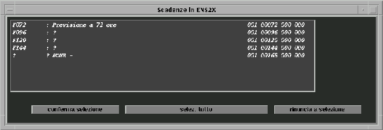
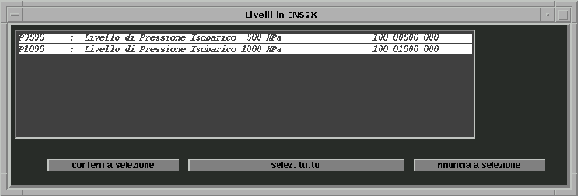
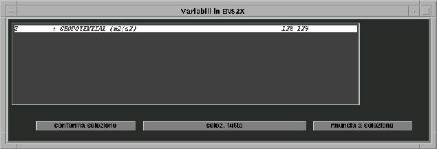
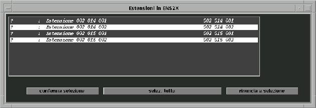
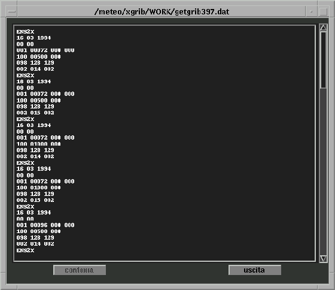
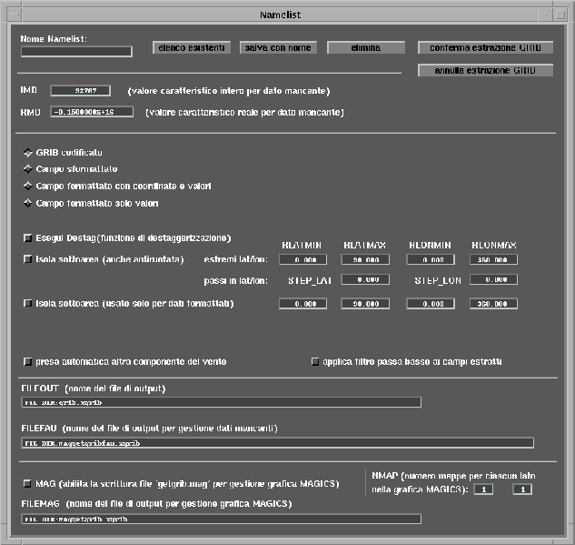

Sistema
Archiviazione GRIB 
Sistema
Archiviazione GRIB 
6. Routines di accesso
Le routines scritte in linguaggio FORTRAN, documentate di seguito, consentono un accesso guidato ai GRIB archiviati nella struttura sopra descritta da parte di un programma applicativo scritto dall'utente.
Le routines ad alto livello a disposizione sono:
ixgrb_load_dd prepara il contesto per l'accesso all'archivio
ixgrb_open messa in linea di un dataset
ixgrb_read1 retrieval di un GRIB da un dataset in linea
ixgrb_read_next retrieval del prossimo GRIB da un dataset
n_filter_grib_nt stabilisce se un GRIB soddisfa un certo filtro
ixgrb_close messa fuori linea di un dataset
n_where_in_ds_nt rende le sezioni che contengono una certa data
ixgrb_where_seg rende le sezioni che contengono una certa data
ixgrb_agenda rende le sezioni che contengono una certa data
La sequenza completa di librerie per ottenere un eseguibile con tutti i simboli esterni soddisfatti è la seguente:
Sistemi VMS:
GRB_ROU:LIBROU.OLB
GRB_BASE:[IX]LIBIX.OLB
GRB_BASE:[GRIBEX11]GRIBEX11.OLB
Sistemi UNIX:
$GRB_ROU/librou.a
$GRB_BASE/ix.r/libix.a
$GRB_BASE/gribex11.r/libgribex11.a
L'ultima libreria in entrambe i casi contiene le routines ECMWF relative al pacchetto GRIBEX che l'utente deve richiedere direttamente al Centro Europeo.
Nella scrittura di un programma di accesso all'archivio, l'utente deve tenere presente le seguenti considerazioni.
La prima cosa da fare è caratterizzare i devices che andranno acceduti per le ricerche di segmenti offline (la sezione online è accedibile per definizione).
La caratterizzazione avviene chiamando la routine IXGRB_LOAD_DD che permette di dichiarare i devices tipo disco e tipo nastro elencandoli in due files diversi (il sistema standard di estrazione usa i files assegnati alle due variabili ambientali DISCHI e NASTRI), questa dichiarazione vale per tutti i dataset che verranno aperti nel programma, è il sistema che cercherà automaticamente se e dove aprire nuove sezioni di un dataset e lo fa solo all'occorrenza.
Esempi di contenuti dei files sopra citati possono essere:
DISCHI ODA1:[000000] (VMS) /grib/online/ (UNIX)
ODA2:[000000] /cdrom/
DK200:[BASEGRIB]
NASTRI MKA200: /nrmt0/
Chiamando questa routine si può anche richiedere (tramite la flag che compare come primo parametro in lista) che il sistema si comporti quando sorga la necessità di richiedere la messa in linea di sezioni richieste a run time e non presenti sui devices in maniera interattiva piuttosto che restituire direttamente un errore di GRIB non trovato.
Il dataset viene poi "aperto" com la IXGRB_OPEN (che praticamente gli assegna solo un control point).
Viene poi acceduto tramite le funzioni IXGRB_READ1 e IXGRB_READ_NEXT che cercano il dato nei segmenti disponibili più vicini alla sezione on line, se i dati vengono trovati o on line o off line su un device predichiarato al sistema, tutto procede fino in fondo; se un dato non è disponibile e non è stato richiesto un comportamento interattivo, la routine di lettura chiamata torna con un codice di errore, se invece è stato richiesto un comportamento interattivo, la routine al suo interno propone a terminale all'operatore quale sezione montare e su che device operare.
Se immediatamente dopo l'apertura viene chiamata la IXGRB_READ_NEXT, viene restituito per primo il GRIB più vecchio presente in una delle sezioni dichiarate in linea, chiamate successive scorrono via l'archivio verso le date più recenti passando automaticamente da una sezione in linea all'altra. Chiamando invece per prima la IXGRB_READ1 e quindi la IXGRB_READ_NEXT si ottiene un preposizionamento iniziale e quindi una scansione sequenziale a partire dal primo GRIB selezionato se la chiamata a IXGRB_READ1 va a buon fine. Se invece la chiamata non va buon fine, se la sezione sotto accesso è dotate di indice, la successiva chiamata a IXGRB_READ_NEXT renderà il GRIB logicamente succssivo a quello non trovato, se la sezione non è dotata di indice, verrà reso il primo GRIB del segmento adiacente a quello che avrebbe dovuto contenere il GRIB richiesto con la IXGRB_READ1.
La riattivazione di una nuova catena di scansione sequenziale tramite la IXGRB_READ_NEXT deve passare attraverso la chiusura e riapertura del dataset.
A fine operazione il dataset va chiuso con la IXGRB_CLOSE.
Tenere presente che agli effetti delle routines di accesso, la gestione delle estensioni rimane esattamente uguale a quella della versione 2.2 del GRIBarch (le estensioni continuano a essere viste come ultimi tre valori del codice variabile, che resta a sei valori)
function ixgrb_load_dd (iflx,filonlr,filonls)
c
c Preleva i nomi di devdir contenuti in filonl (elenco dei devices su
c cui potenzialmente saranno presenti le sezioni dei diversi archivi)
c e inizializza la flag iflx per caratterizzare il comportamento nel caso
c un segmento non venga trovato in linea durante l'esecuzione:
c Se non lo trova da nessuna parte e iflx=0 restituira' codice =-1
c Se non lo trova da nessuna parte e iflx=1 porrà a terminale la
c richiesta di messa on line e poi ritentera' l'apertura.
c
c iflx int =0 ritorna errore se non trovi in linea il segmento
c richiesto (funzionamento batch).
c =1 domanda a video di mettere in linea una particolare
c sezione (potenzialmente) contenente il record
c richiesto utilizzando uno dei devices disponibili,
c poi ritenta l'accesso (che se a questo punto
c fallisce causa un comportamento analogo a iplx=0)
c filonlr char Nome del file contenente i nomi dei dischi su cui
c cercare i files con i GRIB di sezioni random.
c filonls char Nome del file contenente i nomi dei nastri su cui
c cercare i files con i GRIB di sezioni sequential.
c NELLA VERSIONE UNIX UTILIZZARE LE VERSIONI NOREWIND
c DEI DEVICES.
c
c ixgrb_load_dd = 0 tutto ok
c = 1 errore messa in linea
c = -1 troppi devices elencati
function ixgrb_open (nompax)
c
c Metti in linea l'archivio XGRIBARCH <nompax> e rendi in output
c il numero di apertura assegnato.
c
c nompas char Nome archivio XGRIBarch
c
c ixgrb_open > 0 numero di apertura da usare per gli accessi
c successivi
c = 0 errore messa in linea (nessun numero libero)
c = -n gia' aperto sul numero n
c = -100 errore accesso .x o .ds o DSCAR
function ixgrb_read1 (nun_x,gmc,datx,ora,iscad,ilev,ivar,maxv,
+ idat,fdat,nval,lgrib,ipbwk,v,isec0,isec1,isec2,zsec2,
+ isec3,isec4)
c
c Leggi un campo dall'archivio XGRIBarch aperto su nun_x
c
c in input
c
c nun_x int Numero di apertura restituito da ixgrb_open
c gmc char Tipo di retrieval
c
c G = Rendi il GRIB come e' memorizzato
c GC = Rendi il GRIB completato COMUNQUE con sez2 e sez3
c (se ci riesci)
c GCD = Se il GRIB ha la sez3 e risulta staggered provvedi
c a decodificarlo, destaggerare la matrice, a
c rigribbarlo eliminando la sezione 3 e rendi in
c in o/p il risultato di tutto ciò.
c M = Rendi una matrice di valori come chiede il GRIB.
c MC = Rendi una matrice di valori COMUNQUE completata
c con i manca dato rispetto al contenuto delle SEZ3
c MCD = Se il GRIB risulta staggered infittisci la matrice
c e rendila in o/p senza i manca dato.
c B = Rendi in output la byte matrix come previsto dalla
c funzione B della GRIBEX.
c E = Rendi solo se il GRIB esiste o non esiste.
c
c LA GESTIONE DEL .GE. NON E' PIU' EFFETTUATA, PERCHE'
c UN ACCESSO A VUOTO POSIZIONA COMUNQUE IL PUNTATORE
c E IL PROSSIMO ACCESSO SEQUENZIALE PUO' A RICHIESTA
c PRENDERE UN CAMPO BUONO (v. ixgrb_read_next)
c UNICA ECCEZIONE E' L'ACCESSO AD UN RECORD INESISTENTE
c IN UNA SEZIONE RANDOM SENZA INDICE O A UNA SEZIONE
C SU NASTRO , CHE POSIZIONA IL PROSSIMO ACCESSO AL PRIMO
c RECORD DEL SEGMENTO SUCCESSIVO A QUELLO CONTENENTE IL
C RECORD PRIMA RICHIESTO.
c IL RECORD E' TROVATO LA SCANSIONE PROCEDE INVECE CON
c SEMPRE E COMUNQUE CON IL PROSSIMO RECORD IN SEQUENZA
c DOPO QUELLO TROVATO.
c
c datx(3) int Data di emissione del campo da leggere
c ora(2) int Ora di emissione del campo da leggere
c iscad(4) int Scadenza di previsione del campo da leggere
c ilev(3) int Livello del campo da leggere
c ivar(6) int Variabile del campo da leggere
c maxv int Dimensione massima del vettore v()
c idat int Valore di non dato integer (solo campi con bitmap)
c fdat real Valore di non dato real (solo campi con bitmap)
c
c In output
c
c nval int Valori restituiti in v se M* o B,
c lunghezza in bytes del grib in v se G*
c lgrib int lunghezza in bytes del GRIB in ipbwk (COMUNQUE)
c ipbwk int Puntatore ad un buffer interno contenete il GRIB
c in forma codificata eventualmente completato
c con le sezioni 2 e 3 (reso comunque anche se la
c dimensione dell'area utente e' insufficiente).
c
c v(*) --- Vettore con i valori restituiti in o/p
c
c isec0(2) int Decodifica sez0 da GRIBEX
c isec1(*) int Decodifica sez1 da GRIBEX
c isec2(*) int Decodifica sez2 da GRIBEX
c zsec2(*) int Decodifica sez2 da GRIBEX
c isec3(*) int Decodifica sez3 da GRIBEX
c isec4(*) int Decodifica sez4 da GRIBEX
c
c I vettori ISEC sono usati come aree di appoggio e vanno comunque
c dati anche nelle richieste di GRIB codificati.
c Sono stabili in O/P solo per richieste tipo M.
c
c ixgrb_read1 = 0 Tutto OK
c = 1 Archivio non in linea
c = 2 Record non presente in archivio (nrec posizionato)
c (perché manca)
c = 22 Record non presente in archivio (nrec non posizionato)
c (perché la data o le caratteristiche
c non sono compatibili con quelle dell'archivio)
c = 3 Vettore v() troppo piccolo per contenere campo
c (le informazioni di nval sono comunque impostate)
c = 4 Info mismatch di indice con GRIB
c = 5 Oltre fine file
c = 6 Segmento non in linea
c e ifl = 0, o ifl = 1 e rinuncia alla messa in linea.
c = 7 GRIB o 7777 non presenti
c = 8 GRIB non completato della sez2
c = 9 GRIB non completato della sez3
c = 10 GRIB non completato delle sez2 e sez3
c = 11 Richiesta decodifica non valida
c < 0 Errori accesso archivi o positivi
c di GRIBEX -(10000+ier)
function ixgrb_read_next (nun_xa,gmc,maxv,idat,fdat,
+ datx,ora,iscad,ilev,ivar,nval,lgrib,ipbwk,v,isec0,isec1,
+ isec2,zsec2,isec3,isec4)
c
c Leggi il campo dall'archivio XGRIBarch, aperto su nun_x
c corrispondente all'indice successivo a quello letto in
c precedenza o, per archivi privi di indice o sezioni
c sequenziali, quello fisicamente immediatamente successivo
c al record precedentemente letto.
c
c Corre in sequenza tutte le sezioni in linea partendo da
c quella contenete la data più vecchia risalendo vero la
c data attuale.
c
c in input
c
c nun_xa int In valore assoluto e' il numero di apertura restituito da
c ixgrb_open.
c Se positivo la routine non restituisce i GRIB a indice
c vuoto (il codice di ritorno 2 non viene notificato mai).
c Se negato la routine restituisce per i GRIB a indice
c vuoto il codice di ritorno 2.
c gmc char Tipo di retrieval
c
c G = Rendi il GRIB come e' memorizzato
c GC = Rendi il GRIB completato COMUNQUE con sez2 e sez3
c (se ci riesci)
c GCD = Se il GRIB ha la sez3 e risulta staggered provvedi
c a docodificarlo, destaggerare la matrice, a
c rigribbarlo eliminando la sezione 3 e rendi in
c in o/p il risultato di tutto cio'.
c M = Rendi una matrice di valori come chiede il GRIB.
c MC = Rendi una matrice di valori COMUNQUE completata
c con i manca dato rispetto al contenuto delle SEZ3
c MCD = Se il GRIB risulta staggered infittisci la matri
c e rendila in o/p senza i manca dato
c B = Rendi in output la byte matrix come previsto dalla
c funzione B della GRIBEX.
c
c maxv int Dimensione massima del vettore v()
c idat real Valore di non dato intero (solo campi con bitmap)
c fdat real Valore di non dato reale (solo campi con bitmap)
c
c in output
c
c datx(3) int Data di emissione del campo letto
c ora(2) int Ora di emissione del campo letto
c iscad(4) int Scadenza di previsione del campo letto
c ilev(3) int Livello del campo letto
c ivar(6) int Variabile del campo letto
c nval int Valori restituiti in v se M* o B
c lunghezza in bytes del grib in v se G*.
c lgrib int lunghezza in bytes del GRIB in ipbwk (COMUNQUE)
c ipbwk int Puntatore ad un buffer interno contenete il GRIB
c in forma codificata eventualmente completato
c con le sezioni 2 e 3 (reso comunque anche se la
c dimensione dell'area utente e' insufficiente).
c
c v(*) --- Vettore con i valori restituiti in o/p
c
c isec0(2) int Decodifica sez0 da GRIBEX
c isec1(*) int Decodifica sez1 da GRIBEX
c isec2(*) int Decodifica sez2 da GRIBEX
c zsec2(*) int Decodifica sez2 da GRIBEX
c isec3(*) int Decodifica sez3 da GRIBEX
c isec4(*) int Decodifica sez4 da GRIBEX
c
c I vettori ISEC sono usati come aree di appoggio e vanno comunque
c dati anche nelle richieste di GRIB codificati.
c Sono stabili in O/P solo per richieste tipo M.
c
c ixgrb_read_next = 0 Tutto OK
c = 1 Archivio non in linea
c = 2 Record non presente in archivio
c (perche' manca)
c = 3 Vettore v() troppo piccolo per contener
c (le informazioni di nval sono comunque
c = 4 Info mismatch di indice con GRIB
c = 5 Oltre fine file
c = 6 Segmento non in linea
c e ifl = 0, o ifl = 1 e rinuncia alla me
c = 7 GRIB o 7777 non presenti
c = 8 GRIB non completato della sez2
c = 9 GRIB non completato della sez3
c = 10 GRIB non completato delle sez2 e sez3
c = 11 Richiesta decodifica non valida
c < 0 Errori accesso archivi o positivi
c di GRIBEX -(10000+ier)
function ixgrb_close (nun_x)
c
c Metti fuori linea l'archivio XGRIBarch aperto con numero di apertura nun_x.
c
c ixgrb_close = 0 OK
logical function n_filter_grib_nt
+ (primo,extype,values,ksec1,
+ nlev,vlev,
+ ndat,vdat,
+ nvar,vvar,
+ nsca,vsca)
c
c Dato in input un GRIB estratto secondo extype e reso in values
c se extype comprende G o la cui sezione 1 e' resa in ksec1 se
c extype comprende M, rendi .TRUE. se soddisfa i limiti dati
c .FALSE. altrimenti.
c
c primo log indicatore di prima volta : se .true.
c forza il calcolo interno dei parametri
c di confronto, dopo passare sempre a .false.
c La prima volta NON confronta alcun GRIB.
c
c extype c*(*) tipo estrazione
c values(*) xxx buffer col grib (o matrice valori)
c ksec1(*) int sezione 1 (solo se matrice valori)
c nlev int Numero degli elementi di vlev(3,nlev) se
c e' dato un elenco di livelli a cui il GRIB
c deve riferirsi.
c Zero se qualsiasi livello e' buono (vlev non e'
c usato).
c -1 se vlev(3,1) e vlev(3,2) solo limiti di livello
c entro cui il GRIB deve essere compreso
c vlev(3,*) int Limiti sui livelli
c vlev(1,*) come KSEC1(7) di GRIBEX
c vlev(2,*) come KSEC1(8) di GRIBEX
c vlev(3,*) come KSEC1(9) di GRIBEX
c ndat int Come per livelli ma per le date di emissione
c vdat(5,*) int limiti sulle date di emissione
c vdat(1,*) giorno del mese
c vdat(2,*) mese
c vdat(3,*) anno a quattro cifre
c vdat(4,*) ore
c vdat(5,*) minuti
c nvar int Come per livelli ma per le date
c vvar(6,*)int Limite di codice completo dalla variabile del record da cercare.
c vvar(1,*) centro emittente come KSEC1(2) di GRIBEX
c vvar(2,*) codice tabella come KSEC1(1) di GRIBEX
c vvar(3,*) codice parametro come KSEC1(6) di GRIBEX
c vvar(4,*) codice parametro come KSEC1(37) di GRIBEX
c vvar(5,*) codice parametro come KSEC1(39) di GRIBEX
c vvar(6,*) codice parametro come KSEC1(42) di GRIBEX
c (4,5,6 usati solo per ECMWF e GRIB speciali)
c nscad int Come per livelli ma sulle scadenze
c vsca(4,*) int Limiti di validita' completa della previsione del record da cercare.
c vsca(1,*) indicatore unita' di tempo come KSEC1(15)
c vsca(2,*) P1 come KSEC1(16)
c vsca(3,*) P2 come KSEC1(17)
c vsca(4,*) indicatore intervallo di tempo come KSEC1(18)
integer function n_where_in_ds_nt
+ (iop,dsname,date,kfl,sez1,sez2,sez3,segmh)
c
c Dati un dataset name e una date restituisce la situazione delle
c presenza (effettiva o potenziale) di questa data nelle diverse
c sezioni.
c
c iop i*4 I =0 rendi solo kfl e non le informazioni di sezx e segmh
c =1 rendi tutto
c dsname c(*) I Nome del dataset da analizzare
c date c12 I Data da ricercare AAAAMMGGHHmm
c kfl i*4 O =0 non c'e' la data
c =1 c'e' nella sezione in linea
c =2 c'e' in sez offline ad accesso diretto
c =4 c'e' in sez offline ad accesso sequenziale
c =256 se ci fosse dovrebbe essere in linea
c =512 se ci fosse dovrebbe essere in sez offline ad accesso diretto
c =1024 se ci fosse dovrebbe essere in sez offline ad accesso sequenziale
c (somme dei precedenti indicano presenze multiple)
c sez1 c(*) O device online (se esiste il segmento che contiene o
c conterrebbe la data, se no ' ')
c sez2 c(*) O header sez offline random (se esiste il segmento che contiene o
c conterrebbe la data, se no ' ')
c sez3 c(*) O header sez offline sequen (se esiste il segmento che contiene o
c conterrebbe la data, se no ' ')
c segmh c(*) O header del segmento che contiene o conterrebbe la data,
c (se no ' '. Se il segmento e' presente in piu' di una sezione viene
c reso l'header della sezione piu' vicina a quella online)
c
c In questa versione di XGRIBARCH un segmento NON puo' piu' trovarsi
c in piu' di una sezione offline per tipo (una sola random e una sola
c sequenziale)
c
c errori ritornati:
c
c 0 tutto OK
c 1 dsname not found
c altri errori I/O
subroutine ixgrb_where_seg (iop,nomseg,kfl,sez1,sez2,sez3,segmh)
c
c dato un nome segmento nella forma [<device_dir>]<dsname>.aaaammgg
c deduci se questo segmento compare (o dovrebbe comparire) nelle
c sezioni off line su disco o su nastro e se si rendi i bit del caso.
c
c iop i*4 I =0 rendi solo kfl e non le informazioni di sezx e segmh
c =1 rendi tutto
c nomseg c*(*) I nome segmento nella forma [<device_dir>]<dsname>.aaaammgg
c kfl i*4 O =0 non c'e' il segmento
c =1 c'e' in linea
c =2 c'e' in sez offline ad accesso diretto
c =4 c'e' in sez offline ad accesso sequenziale
c =256 se ci fosse dovrebbe essere in linea
c =512 se ci fosse dovrebbe essere in sez offline ad accesso diretto
c =1024 se ci fosse dovrebbe essere in sez offline ad accesso sequenziale
c (somme dei precedenti indicano presenze multiple)
c
c sez1 c(*) O device online (se iand(kfl,1).ne.0 se no ' ')
c sez2 c(*) O header sez offline random (se iand(kfl,2).ne.0 se no ' ')
c sez3 c(*) O header sez offline sequen (se iand(kfl,4).ne.0 se no ' ')
c segmh c(*) O header del segmento (se kfl.ne.0 se no ' ')
c (Se il segmento e' presente in piu' di una sezione viene
c reso l'header della sezione piu' vicina a quella online)
c
c In questa versione di XGRIBARCH un segmento NON puo' piu' trovarsi
c in piu' di una sezione offline per tipo (una sola random e una sola
c sequenziale)
function ixgrb_agenda (ifla,agenda,sez,mxr,reco,ns,recs)
c
c Gestione del file agenda
c
c ifla=0 Ricerca la sezione sez in agenda e rendi il record agenda
c in reco e in numero dei segmenti in ns e i records dei
c segmenti in recs (mxr=dimensione di recs e quindi
c numero massimo di segmenti gestiti per sezione).
c Se sez='ON_LINE' rendi le informazioni della sez online:
c agenda in questo caso contiene il nome del DS.
c ifla=1 Aggiorna l' agenda della sezione sez con reco e rimpiazza
c i records segmenti con gli ns di recs.
c Se la sez non c'e' metti tutto in fondo.
c Se sez='ON_LINE' torna OK senza nulla fare.
c
c ixgrb_agenda=1 errori I/O
c ixgrb_agenda=-1 agenda non trovata
c ixgrb_agenda=0 tutto ok
7. Estrazioni
Sono possibili due modalità di estrazione grib: interattiva e da piano, a partire dalle selezioni effettuabili tramite le maschere guidate alla voce principale estrazioni nella barra del menù XGRIBarch
Selezionando l'estrazione interattiva parte un programma che genera direttamente una richiesta di estrazione effettiva, che non verrà memorizzata come piano per essere riutilizzato altre volte.
La sequenza operativa è qui di seguito descritta.
La prima maschera consente di selezionare il dataset e le sezioni opportune:
La selezione del DS può essere fatta o via lista (premendo il pulsante "lista"), o dando il nome nella casella, nella seconda ipotesi è possibile dare un nome logico a cui è assegnato esternamente un nome di dataset e in tal caso il programma provvede immediatamente alla traduzione.
Impostati dataset e data, premere "selezione" verranno presentate tutte le possibili scadenze, livelli, variabili ed estensioni (se ne esiste almeno una diversa da ‘000 000 000’) presenti in ogni parte dell'archivio.
La presentazione avviene prima dando la lista a selezione multipla di tutte le possibili scadenze e l'utente selezionerà tutte le scadenze che desidera trattare in un colpo solo:

poi dando la lista a selezione multipla di tutti i possibili livelli e l'utente selezionerà tutti i livelli che desidera trattare in un colpo solo:

poi dando la lista a selezione multipla di tutte le possibili variabili e l'utente selezionerà tutte le variabili che desidera trattare in un colpo solo:

poi dando la lista a selezione multipla di tutte le possibili estensioni e l'utente selezionerà tutte le estensioni che desidera trattare in un colpo solo:

Il pulsante "selez. tutto" presente nei selettori di lista agevola l'utente nella eventuale richiesta di tutti gli elementi della lista.
A questo punto il programma genera in maniera incrociata tutte le quaterne possibili in base alle selezioni fatte e filtra solo quelle effettivamente disponibili in base a quanto risulta dal descrittore (.DES) del dataset selezionato.
L'utente ha poi nuovamente il controllo per effettuare un'altra selezione di dataset e/o data. Ripremendo poi "selezione" il processo sopra descritto si reitera, con la variante che, se il dataset non è stato modificato, viene domandato se si vuole rigenerare per la nuova data esattamente lo stesso piano, ed in tale ipotesi nessuna altra richiesta viene fatta.
Premendo "rinuncia a selezione" viene domandato se si vuole la visualizzazione del file di richieste preparato e quindi se la creazione di detto file è confermata.
Es. piano:

Selezionando l'estrazione da piano, il programma che parte consente di gestire piani già creati o di crearne di nuovi. Questi piani possono essere registrati per essere riutilizzati anche in successive occasioni.
I piani che vengono presi in considerazione dal programma sono memorizzati in file residenti nel directory a nome logico FIL_DIR e con estensione .EXPA (ad es. il piano "PINCO" risiede in FIL_DIR:PINCO.EXPA (VMS) o $FIL_DIR/pinco.expa (Unix)).
Il programma consente la creazione di un nuovo piano digitandone direttamente il nome nella casella apposita e premendo "editor" o di modificarne uno vecchio premendo "lista" e selezionandone il nome, poi premendo "editor", l'editor viene attivato direttamente da programma su di una finestra appositamente aperta. Un piano vecchio può essere semplicemente visualizzato selezionandolo e premendo "visualizza" o eliminato selezionandolo e premendo "cancella" (operazione che richiede conferma). Premendo "uscita" il programma, se è stato selezionato un piano, chiede una conferma per la generazione effettiva delle richieste di estrazione.
Il programma di espansione GRB_EXE:FP_EXPANSION.EXE è attivato direttamente dalla funzione di menù, ma è comunque attivabile anche manualmente in uno dei seguenti modi:
expand <file_plan> <request_file>
Oppure:
> setenv EXPANSIONFILE <file_plan> $ define EXPANSIONFILE <file_plan>
> setenv GETGRIBDAT <request_file> $ define GETGRIBDAT <request_file>
> expand $ expand
Questi comandi possono essere usati anche in procedure batch di estrazione che utilizzano piani preconfezionati in maniera routinaria.
Se si prefissa il nome del file di destinazione con + viene creato (o aperto in append) un file binario in cui vengono scritti i record binari e non ASCII relativi alla richiesta. I records sono uno per ogni GRIB da estrarre con tutti gli elementi su delle longword salvo l'archivio che e' a caratteri e le date se la richiesta comporta TODAY non sono riportate a +/-n 0 0 in maniera tale da poter essere specializzate da fuori. Qualora si usi la tecnica del file binario non e' possibile dare ranges di date nella forma t_txx
Un comando del tipo:
expand <file_plan> +outbin
Porta dunque a creare il file outbin con i records aventi il formato descritto dalla seguente struttira:
typedef struct {
short cw,spare; /* Control word (nasce a 0) & spare word */
char ds[20]; /* Dataset name */
short aaaa,mm,gg,hh,min; /* Anno mese giorno (se aaaa mm =0 gg relativo */
short scad[4];
short lev[3];
short var[3];
short est[3];
} binout;
7.1 Formati di richieste di estrazione e piani
Una richiesta di estrazione è una sequenza, memorizzata in un file, di gruppi di records del tipo qui descritto (un gruppo ogni GRIB da pescare).
<nome_dataset> !nome del Dataset da cui estrarre
<gg> <mm> <ccaa> !data di emissione del GRIB
<hh> <mi> !ora di emissione del GRIB
<unit> <p1> <p2> <range> !sequenza standard della scadenza del GRIB
<lev_type> <l1> <l2> !sequenza standard del livello del GRIB
<center> <table> <par> !sequenza standard della variabile
<par> <s1> <s2> <s3> !sequenza standard dell’estensione
Tutti i parametri per l'estrazione del GRIB, salvo il nome dataset che ha un significato locale all'applicazione, hanno una corrispondenza diretta con le informazioni omologhe di sezione 1 utilizzate dalla routine GRIBEX del ECMWF per l'estrazione secondo lo schema riportato alla pagine seguente:
Parola Descrizione Omologo per richiesta
del Vettore di estrazione
KSEC1 in I/O (i caratteri indicano
da GRIBEX l'ampiezza massima)
1 Version number of Code Table 2. <center> ccc
2 Identification of centre
(Code Table 0). <table> ttt
6 Indicator of parameter
(Code Table 2). <par> vvv
7 Indicator of type of level
(Code Table 3). <lev_type> ttt
(or satellite identifier)
Satellite useage as defined by
INPE/CPTEC and used by ECMWF,
pending final definition by WMO.
8 Height, pressure etc of level
(Code Table 3). <l1> lllll
Single level or top of layer.
(or satellite spectral band)
Satellite useage as defined by
INPE/CPTEC and used by ECMWF,
pending final definition by WMO.
9 Height, pressure etc of level
(Code Table 3). <l2> lll
Bottom of layer, if word 6
indicates a layer.
10 Year of century } <..aa> ..aa
11 Month } Reference time of data - <mm> mm
12 Day } Date and time of start of <gg> gg
13 Hour } averaging or accumulation <hh> hh
14 Minute } period. <mi> mm
15 Indicator of unit of time
(Code Table 4). <unit> ttt
16 P1 - Period of time (number of
time units) <p1> sssss
(0 for analyses or initialised
analyses). <p2> sss
17 P2 - Period of time (number of
time units); or time interval
between successive analyses,
initialised analyses or forecasts
undergoing averaging or accumulation;
otherwise set to zero.
18 Time range indicator (Code Table
5). <range> rrr
21 Century of reference time of data. <cc..> + 1 cc..
24 Flag field to indicate local use in
Section 1. (Se =0
0 - No local use of section 1. <s1><s2><s3> sono 0
1 - Local use of section 1. Se =1 sono come segue)
37 ECMWF local usage identifier. <s1> xxx
39 Type <s2> xxx
42 Number <s3> xxx
Un piano di estrazione può invece essere compilato con uno speciale linguaggio semplificato che facilita la generazione delle richieste in automatico. Le specifiche del linguaggio e le sue modalità di utilizzo sono riportate qui di seguito.
If a large number of GRIBS are required, it is not practicable to use the program which selects a single GRIB. For this reason, a program was written which enables users to list their GRIB requirements in a file plan - the program determines the appropriate keys.
In the file plan, the user is able to specify -
i. a dataset name or an environmental variable that was previously assigned a valid dataset name.
ii. a list of dates - this list may consist of any combination of single dates (in the form: ggmmaaaa or gg mm aaaa); an initial date, a final date, and a step in days (the program calculates all intervening dates at step intervals; if the user does not specify a step, its value defaults to 1 day); the mnemonic today (T or today) the mnemonic yesterday (Y or yesterday). Relative dates both in the future and in the past can be identified by mnemonics in the form T+n, Y+n, T-n, Y+n where n is a number of days. The mnemonics containing today and yesterday may also be used as final dates;
iii. a list of times - this list may consist of any combination of single times (in the form: hhmm or hh mm) an initial time, a final time, and a step in hours (the program calculates all intervening times at step intervals; if the user does not specify a step, its value defaults to 1 hour)
iv. a list of scadenzas - this list may consist of any combination of actual scadenza values (in the form: ttt sssss sss rrr) a single * indicating that al possible scadenzas are required mnemonics to represent scadenzas a mnemonic followed by the * symbol - this indicates that the user requires all mnemonics which belong to that family of mnemonics, for example: the mnemonic F* indicates that the user requires all mnemonics which begin with an F
v. a list of levels - this list may consist of any combination of actual level values (in the form: ttt lllll lll) a single * indicating that al possible levels are required mnemonics to represent levels a mnemonic followed by the * symbol - this indicates that the user requires all mnemonics which belong to that family of mnemonics, for example: the mnemonic G* indicates that the user requires all mnemonics which begin with an G
vi. a list of variables - this list may consist of any combination of actual variable values (in the form: ccc ttt vvv) a single * indicating that al possible varaibles are required mnemonics to represent variables a mnemonic followed by the * symbol - this indicates that the user requires all mnemonics which belong to that family of mnemonics, for example: the mnemonic T* indicates that the user requires all mnemonics which begin with an T
vii. a list of extension - this list may consist of any combination of actual extensions values, consistiong i triplets of numbers. Any of the number of the triplet can be substituted by a * symbol, indicating that all values present for thet element must be extracted. No mnemonic can be used for extensions. A list of different triplets can be given, separating the triplets with commas. The “est:” request is not mandatory, if omitted est: 0 0 0. is implied.
These are examples of acceptable entries in a file plan -
DATASET: ecmwf_eu111.
DATES: 12071994,today,08081994_31081994/3,yesterday-3.
TIMES:0000_0600,1200.
SCAD: 0 4 0 24, ai, F*.
LEVEL:000 123 123, G.
VAR: t,U,V.
EST: * 12 72, * 172 123.
.....................
DATASET: ecmwf_eu111.
DATES: 12071994,today,08081994_31081994/3.
TIMES:0000_0600,1200.
SCAD: *.
LEVEL: *.
VAR: t,U,V.
EST: * * *.
Entries may be in any combination of upper and lower case letters. Whitespace characters (eg spaces, carriage returns) are ignored within the lists of datasets, dates, and times. Leading whitespaces are ignored in the lists of scadenzas, levels, variables and extensions (because, for example, a scadenza consists of 4 integer values, spaces are required to distinguish between these 4 integers, and cannot be discarded). The only requirements are:
i. each list begins with a colon :
ii. each list terminates with a period
iii. individual items in a list are separated by commas
iv. an underscore is used to separate initial from final dates and times
v. the \ or / symbol is used when a step is specified
vi. a mnemonic must contain at least one character
The words DATASET, DATES, TIMES, SCAD are actually only comments - the program functions perfectly if they are ommitted; however, they make the file more readable for the user. These lines must appear in this exact order in any request block in the file plan.
It is possible to specify a list of variables followed by a list of levels, or a list of levels followed by a list of variables. The program requires the list of variables to be preceded by a 'v' and a colon - eg VAR: and the list of levels to be preceded by an 'l' and a colon - eg LEVEL: so that it can distinguish between variables and levels.
The choice of variables depends on the choice of dataset - for this reason only one dataset can be specified in a list. If more than one dataset is required, it is necessary to write another entry in the file. For example -
DATASET: ecmwf_eu111.
DATES: 12071994,today,08081994_31081994/3.
TIMES:0000_0600,1200.
SCAD: 0 4 0 24, ai, F*.
LEVEL:000 123 123, G.
VAR: t,U,V.
EST: * * *.
DATASET: LAMBO01O.
DATES: 12 07 1994,yesterday-2.
TIMES:0000_0600,1200.
SCAD: 0 4 0 24, ai, F*.
VAR: t,U,V.
LEVEL:000 123 123, G.
EST: * * *.
The EST request must be the last in the request. If not present est: 0 0 0. is implied.
DATASET: LAMBO01O. DATES: 12 07 1994,yesterday-2. TIMES:0000_0600,1200.
SCAD: 0 4 0 24, ai, F*. VAR: t,U,V. LEVEL:000 123 123, G.
EST: 0 0 0.
is qeuivalent to:
DATASET: LAMBO01O. DATES: 12 07 1994,yesterday-2. TIMES:0000_0600,1200.
SCAD: 0 4 0 24, ai, F*. VAR: t,U,V. LEVEL:000 123 123, G.
If the program encounters an invalid dataset, date, time, an error message is displayed, and the program terminates. Invalid mnemonics generate error messages, but do not terminate the program.
The purpose of the program is to write an expanded version, in extraction request format, of the user's file plan, listing the key of each GRIB individually. When the program encounters a mnemonic it substitutes the corresponding actual value.
This version of the program does not generate request entries for scad/level/variable/extension combinations which are not present in the dataset description table GRB_DAT:<dataset>.des . It is so possible to make extensive use of wildcards in plan request blocks without generating a very large amount of "impossible" extraction request entries. No check is made at generation time on the effective presence of a file plan declared emission date in the dataset: all user required emission dates are always generated.
The elements of a key are listed in the following order of precedence
dataset or dataset
date date
time time
scadenza scadenza
level variable
variable level
extension extension
In other words, for example, all the times for a given date are listed before the next date is listed.
The user has the option of specifying
i. a number of levels for a given variable (in which case the list of levels is specified before the list of variables in the file)
ii. a number of variables for a given level (in which case the list of variables is specified before the list of levels in the file)
The reason for this is that, for example, wind requires two variables (the u and v components of the wind) at a given level.
For example, given the file plan
DATASET: LAMBO01O.
DATES: yesterday.
TIMES:0000_0600/3.
SCAD: 1 24 0 0.
VAR: U,V.
LEVEL:105 10 0.
if today is 06/09/1994 the program would produce the expanded file
LAMBO01O
05 09 1994
00 00
001 00024 000 000
105 00010 000
097 001 033
000 000 000
LAMBO01O
05 09 1994
00 00
001 00024 000 000
105 00010 000
097 001 034
001 025 071
LAMBO01O
05 09 1994
03 00
001 00024 000 000
105 00010 000
097 001 033
020 014 072
LAMBO01O
05 09 1994
03 00
001 00024 000 000
105 00010 000
097 001 034
000 000 000
LAMBO01O
05 09 1994
06 00
001 00024 000 000
105 00010 000
097 001 033
000 000 000
LAMBO01O
05 09 1994
06 00
001 00024 000 000
105 00010 000
097 001 034
000 000 000
7.2 Gestione dei gruppi mnemonici
Gli mnemonici da usare per la traduzione e per risolvere le wildcard sono dedotti dal file di descrizione del dataset, che risiede in GRB_DAT:<dataset>.des, questo stesso file viene utilizzato per verificare l'effettiva esistenza delle terne scadenza/livello/variabile/estensione generate. Un esempio di un gruppo di records di un file .des è riportato qui di seguito.
001 00006 000 000 105 00002 000 001 011 000 000 000 | 'F006' 'G02' 'T'
001 00006 000 000 105 00010 000 001 033 000 000 000 | 'F006' 'G10' 'U'
001 00006 000 000 105 00010 000 001 034 000 000 000 | 'F006' 'G10' 'V'
001 00012 000 000 105 00002 000 001 011 000 000 000 | 'F012' 'G02' 'T'
001 00012 000 000 105 00010 000 001 033 000 000 000 | 'F012' 'G10' 'U'
001 00018 000 000 105 00002 000 001 011 000 000 000 | 'F018' 'G02' 'T'
001 00018 000 000 105 00010 000 001 033 000 000 000 | 'F018' 'G10' 'U'
Ogni record ha nella prima parte (prima di | ) l'elenco in forma standard delle quaterne scadenze/livello/variabile/estensione e nella seconda parte le corrispondenti associazioni di mnemonici. Se per un dato codice standard di scadenza, livello o variabile non dovesse essere stato definito il corrispondente mnemonico, al posto di quest'ultimo comparirebbe un gruppo '?' .
Gli mnemonici contenuti in questi files sono predefiniti a livello di sistema o definiti dall'utente durante le procedure di accoglienza via che nuovi elementi si aggiungono alle tabelle apportati da nuovi GRIB. Le tabelle base degli mnemonici sono:
La tabella GRB_DAT:MEMO_SCA.GLOBAL che elenca gli mnemonici delle scadenze.
Come tabella predefinita viene data la seguente (attenzione che in tabella l'ordine dei numeri non è quello standard "ttt sssss sss rrr" ma il vecchio ordinamento "ttt rrr sssss sss").
'C6006' 1 4 0 6 'Prodotto cumulato tra l`Analisi e la Previsione a 6 ore'
'C6012' 1 4 6 12 'Prodotto cumulato tra la Previsione a 6 e 12 ore'
'C6018' 1 4 12 18 'Prodotto cumulato tra la Previsione a 12 e 18 ore'
'C6024' 1 4 18 24 'Prodotto cumulato tra la Previsione a 18 e 24 ore'
'C6030' 1 4 24 30 'Prodotto cumulato tra la Previsione a 24 e 30 ore'
'C6036' 1 4 30 36 'Prodotto cumulato tra la Previsione a 30 e 36 ore'
'C6042' 1 4 36 42 'Prodotto cumulato tra la Previsione a 36 e 42 ore'
'C6048' 1 4 42 48 'Prodotto cumulato tra la Previsione a 42 e 48 ore'
'C6054' 1 4 48 54 'Prodotto cumulato tra la Previsione a 48 e 54 ore'
'C6060' 1 4 54 60 'Prodotto cumulato tra la Previsione a 54 e 60 ore'
'C6066' 1 4 60 66 'Prodotto cumulato tra la Previsione a 60 e 66 ore'
'C6072' 1 4 66 72 'Prodotto cumulato tra la Previsione a 66 e 72 ore'
'F012' 1 0 12 0 'Previsione a 12 ore'
'F018' 1 0 18 0 'Previsione a 18 ore'
'F024' 1 0 24 0 'Previsione a 24 ore'
'F030' 1 0 30 0 'Previsione a 30 ore'
'F036' 1 0 36 0 'Previsione a 36 ore'
'F042' 1 0 42 0 'Previsione a 42 ore'
'F048' 1 0 48 0 'Previsione a 48 ore'
'F054' 1 0 54 0 'Previsione a 54 ore'
'F060' 1 0 60 0 'Previsione a 60 ore'
'F066' 1 0 66 0 'Previsione a 66 ore'
'F072' 1 0 72 0 'Previsione a 72 ore'
'AI' 1 1 0 0 'Analisi Inizializzata
'V00' 1 10 0 0 'Prodotto valido alla data di Emissione'
'F006' 1 0 6 0 'Previsione a 6 ore'
'AN' 1 0 0 0 'Analisi Non Inizializzata
La tabella GRB_DAT:MEMO_LEV.GLOBAL che elenca gli mnemonici dei livelli.
Come tabella predefinita viene data la seguente (qui l'ordine è quello
standard "ttt lllll lll").
'P0100' 100 100 0 'Livello di Pressione Isobarico 100 HPa'
'P0150' 100 150 0 'Livello di Pressione Isobarico 150 HPa'
'P0200' 100 200 0 'Livello di Pressione Isobarico 200 HPa'
'P0250' 100 250 0 'Livello di Pressione Isobarico 250 HPa'
'P0300' 100 300 0 'Livello di Pressione Isobarico 300 HPa'
'P0400' 100 400 0 'Livello di Pressione Isobarico 400 HPa'
'P0500' 100 500 0 'Livello di Pressione Isobarico 500 HPa'
'P0700' 100 700 0 'Livello di Pressione Isobarico 700 HPa'
'P0850' 100 850 0 'Livello di Pressione Isobarico 850 HPa'
'P0925' 100 925 0 'Livello di Pressione Isobarico 925 HPa'
'P1000' 100 1000 0 'Livello di Pressione Isobarico 1000 HPa'
'P0010' 100 10 0 'Livello di Pressione Isobarico 10 HPa'
'P0020' 100 20 0 'Livello di Pressione Isobarico 20 HPa'
'P0030' 100 30 0 'Livello di Pressione Isobarico 30 HPa'
'P0050' 100 50 0 'Livello di Pressione Isobarico 50 HPa'
'P0070' 100 70 0 'Livello di Pressione Isobarico 70 HPa'
'P0125' 100 125 0 'Livello di Pressione Isobarico 125 HPa'
'P0175' 100 175 0 'Livello di Pressione Isobarico 175 HPa'
'P0225' 100 225 0 'Livello di Pressione Isobarico 225 HPa'
'P0275' 100 275 0 'Livello di Pressione Isobarico 275 HPa'
'P0325' 100 325 0 'Livello di Pressione Isobarico 325 HPa'
'P0350' 100 350 0 'Livello di Pressione Isobarico 350 HPa'
'P0375' 100 375 0 'Livello di Pressione Isobarico 375 HPa'
'P0425' 100 425 0 'Livello di Pressione Isobarico 425 HPa'
'P0450' 100 450 0 'Livello di Pressione Isobarico 450 HPa'
'P0475' 100 475 0 'Livello di Pressione Isobarico 475 HPa'
'P0525' 100 525 0 'Livello di Pressione Isobarico 525 HPa'
'P0550' 100 550 0 'Livello di Pressione Isobarico 550 HPa'
'P0575' 100 575 0 'Livello di Pressione Isobarico 575 HPa'
'P0600' 100 600 0 'Livello di Pressione Isobarico 600 HPa'
'P0625' 100 625 0 'Livello di Pressione Isobarico 625 HPa'
'P0650' 100 650 0 'Livello di Pressione Isobarico 650 HPa'
'P0675' 100 675 0 'Livello di Pressione Isobarico 675 HPa'
'P0725' 100 725 0 'Livello di Pressione Isobarico 725 HPa'
'P0750' 100 750 0 'Livello di Pressione Isobarico 750 HPa'
'P0775' 100 775 0 'Livello di Pressione Isobarico 775 HPa'
'P0800' 100 800 0 'Livello di Pressione Isobarico 800 HPa'
'P0825' 100 825 0 'Livello di Pressione Isobarico 825 HPa'
'P0875' 100 875 0 'Livello di Pressione Isobarico 875 HPa'
'P0900' 100 900 0 'Livello di Pressione Isobarico 900 HPa'
'P0950' 100 950 0 'Livello di Pressione Isobarico 950 HPa'
'P0975' 100 975 0 'Livello di Pressione Isobarico 975 HPa'
'P1025' 100 1025 0 'Livello di Pressione Isobarico 1025 HPa'
'P1050' 100 1050 0 'Livello di Pressione Isobarico 1050 HPa'
'0ISOT' 4 0 0 'Livello dello Zero Termico'
'MSLP' 102 0 0 'Livello Medio del Mare'
'G00' 1 0 0 'Livello della Superfice del Suolo o del Mare'
'G02' 105 2 0 'Livello 2m. di altezza dal Suolo'
'G10' 105 10 0 'Livello 10m. di altezza dal Suolo'
'G00' 105 0 0 'Livello 0cm. di Altezza dal Suolo'
'UG040' 111 0 40 'Livello 40cm. di Profondita` dal Suolo'
Gli mnemonici delle variabili sono dati come quarto parametro ausiliario nel record associato ad ogni variabile nella tabella delle variabili. E' possibile generare un elenco degli mnemonici simile ai precedenti utilizzando la funzione:
dmnvar <nomefile>
Si otterrà un elenco del tipo:
'PR' 255 001 001 000 000 000 'PRESSURE'
'MSL' 255 001 002 000 000 000 'PRESSURE REDUCED TO MSL'
'MSL' 200 001 002 000 000 000 'PRESSURE REDUCED TO MSL'
'?' 255 001 003 000 000 000 'PRESSURE TENDENCY'
'Z' 255 001 006 000 000 000 'GEOPOTENTIAL'
'Z' 200 001 006 000 000 000 'GEOPOTENTIAL'
'GH' 255 001 007 000 000 000 'GEOPOTENTIAL HEIGHT'
'GH' 255 001 008 000 000 000 'GEOMETRIC HEIGHT'
'T' 255 001 011 000 000 000 'TEMPERATURE'
'T' 097 001 011 000 000 000 'TEMPERATURE'
'T' 200 001 011 000 000 000 'TEMPERATURE'
'?' 255 001 012 000 000 000 'VIRTUAL TEMPERATURE'
'?' 255 001 013 000 000 000 'POTENTIAL TEMPERATURE'
'?' 255 001 014 000 000 000 'PSEUDO-ADIAB POT TEMP'
'?' 255 001 015 000 000 000 'MAXIMUM TEMPERATURE'
'?' 255 001 016 000 000 000 'MINIMUM TEMPERATURE'
'?' 255 001 017 000 000 000 'DEW POINT TEMPERATURE'
'?' 255 001 018 000 000 000 'DEW POINT DEPRESSION'
'?' 255 001 019 000 000 000 'LAPSE RATE'
'?' 255 001 021 000 000 000 'RADAR SPECTRA(1)'
'?' 255 001 022 000 000 000 'RADAR SPECTRA(2)'
'?' 255 001 023 000 000 000 'RADAR SPECTRA(3)'
'?' 255 001 025 000 000 000 'TEMPERATURE ANOMALY'
'?' 255 001 026 000 000 000 'PRESSURE ANOMALY'
'?' 255 001 027 000 000 000 'GEOPOT HEIGHT ANOMALY'
'?' 255 001 028 000 000 000 'WAVE SPECTRA(1)'
'?' 255 001 029 000 000 000 'WAVE SPECTRA(2)'
'?' 255 001 030 000 000 000 'WAVE SPECTRA(3)'
'?' 255 001 031 000 000 000 'WIND DIRECTION'
'?' 255 001 032 000 000 000 'WIND SPEED'
'U' 255 001 033 000 000 000 'U-COMPONENT OF WIND'
'U' 097 001 033 000 000 000 'U-COMPONENT OF WIND'
'U' 200 001 033 000 000 000 'U-COMPONENT OF WIND'
'V' 255 001 034 000 000 000 'V-COMPONENT OF WIND'
'V' 097 001 034 000 000 000 'V-COMPONENT OF WIND'
'V' 200 001 034 000 000 000 'V-COMPONENT OF WIND'
'?' 255 001 035 000 000 000 'STREAM FUNCTION'
'?' 255 001 036 000 000 000 'VELOCITY POTENTIAL'
'?' 255 001 038 000 000 000 'SIGMA COORD VERT VEL'
'W' 255 001 039 000 000 000 'VERTICAL VELOCITY'
'W' 200 001 039 000 000 000 'VERTICAL VELOCITY'
'?' 255 001 040 000 000 000 'VERTICAL VELOCITY'
'?' 255 001 041 000 000 000 'ABSOLUTE VORTICITY'
'?' 255 001 042 000 000 000 'ABSOLUTE DIVERGENCE'
'VO' 255 001 043 000 000 000 'RELATIVE VORTICITY'
'VO' 200 001 043 000 000 000 'RELATIVE VORTICITY'
'?' 255 001 044 000 000 000 'RELATIVE DIVERGENCE'
'?' 255 001 045 000 000 000 'VERTICAL U-COMP SHEAR'
'?' 255 001 046 000 000 000 'VERT V-COMP SHEAR'
'?' 255 001 047 000 000 000 'DIRECTION OF CURRENT'
'?' 255 001 048 000 000 000 'SPEED OF CURRENT'
'?' 255 001 049 000 000 000 'U-COMPONENT OF CURRENT'
'?' 255 001 050 000 000 000 'V-COMPONENT OF CURRENT'
'Q' 255 001 051 000 000 000 'SPECIFIC HUMIDITY'
'Q' 200 001 051 000 000 000 'SPECIFIC HUMIDITY'
'R' 255 001 052 000 000 000 'RELATIVE HUMIDITY'
'R' 200 001 052 000 000 000 'RELATIVE HUMIDITY'
'?' 255 001 053 000 000 000 'HUMIDITY MIXING RATIO'
'?' 255 001 054 000 000 000 'PRECIPITABLE WATER'
'?' 255 001 055 000 000 000 'VAPOUR PRESSURE'
'?' 255 001 056 000 000 000 'SATURATION DEFICIT'
'?' 255 001 057 000 000 000 'EVAPORATION'
'?' 255 001 059 000 000 000 'PRECIPITATION RATE'
'?' 255 001 060 000 000 000 'THUNDER PROBABILITY'
'TP' 255 001 061 000 000 000 'TOTAL PRECIPITATION'
'TP' 200 001 061 000 000 000 'TOTAL PRECIPITATION'
'LSP' 255 001 062 000 000 000 'LARGE SCALE PRECIP'
'LSP' 200 001 062 000 000 000 'LARGE SCALE PRECIP'
'CP' 255 001 063 000 000 000 'CONVECTIVE PRECIP'
'CP' 200 001 063 000 000 000 'CONVECTIVE PRECIP'
'?' 255 001 064 000 000 000 'SNOW RATE WATER EQUIV'
'SCWE' 255 001 065 000 000 000 'WAT EQUIV ACC SNOW DEPTH'
'SCWE' 200 001 065 000 000 000 'WAT EQUIV ACC SNOW DEPTH'
'?' 255 001 066 000 000 000 'SNOW DEPTH'
'?' 255 001 067 000 000 000 'MIXED LAYER DEPTH'
'?' 255 001 068 000 000 000 'TRANS THERMOCLINE DEPTH'
'?' 255 001 069 000 000 000 'MAIN THERMOCLINE DEPTH'
'?' 255 001 070 000 000 000 'MAIN THERMOCLINE ANOM'
'TCC' 255 001 071 000 000 000 'TOTAL CLOUD COVER'
'TCC' 200 001 071 000 000 000 'TOTAL CLOUD COVER'
'?' 255 001 072 000 000 000 'CONVECTIVE CLOUD COVER'
'?' 255 001 073 000 000 000 'LOW CLOUD COVER'
'?' 255 001 074 000 000 000 'MEDIUM CLOUD COVER'
'?' 255 001 075 000 000 000 'HIGH CLOUD COVER'
'?' 255 001 076 000 000 000 'CLOUD WATER'
'LSM' 255 001 081 000 000 000 'LAND SEA MASK'
'LSM' 200 001 081 000 000 000 'LAND SEA MASK'
'?' 255 001 082 000 000 000 'DEV SEA_LEV FROM MEAN'
'SR' 255 001 083 000 000 000 'SURFACE ROUGHNESS'
'ALB' 255 001 084 000 000 000 'ALBEDO'
'ALB' 200 001 084 000 000 000 'ALBEDO'
'ST' 255 001 085 000 000 000 'SOIL TEMPERATURE'
'ST' 200 001 085 000 000 000 'SOIL TEMPERATURE'
'SSW' 255 001 086 000 000 000 'SOIL MOISTURE CONTENT'
'SSW' 200 001 086 000 000 000 'SOIL MOISTURE CONTENT'
'?' 255 001 087 000 000 000 'VEGETATION'
'?' 255 001 088 000 000 000 'SALINITY'
'?' 255 001 089 000 000 000 'DENSITY'
'ICE' 255 001 091 000 000 000 'ICE CONCENTRATION'
'ICE' 200 001 091 000 000 000 'ICE CONCENTRATION'
'?' 255 001 092 000 000 000 'ICE THICKNESS'
'?' 255 001 093 000 000 000 'DIRECTION OF ICE DRIFT'
'?' 255 001 094 000 000 000 'SPEED OF ICE DRIFT'
'?' 255 001 095 000 000 000 'U-COMP OF ICE DRIFT'
'?' 255 001 096 000 000 000 'V-COMP OF ICE DRIFT'
'?' 255 001 097 000 000 000 'ICE GROWTH'
'?' 255 001 098 000 000 000 'ICE DIVERGENCE'
'?' 255 001 100 000 000 000 'SIG HGT COM WAVE/SWELL'
'?' 255 001 101 000 000 000 'DIRECTION OF WIND WAVE'
'?' 255 001 102 000 000 000 'SIG HGHT OF WIND WAVES'
'?' 255 001 103 000 000 000 'MEAN PERIOD WIND WAVES'
'?' 255 001 104 000 000 000 'DIRECTION OF SWELL WAVE'
'?' 255 001 105 000 000 000 'SIG HEIGHT SWELL WAVES'
'?' 255 001 106 000 000 000 'MEAN PERIOD SWELL WAVES'
'?' 255 001 107 000 000 000 'PRIMARY WAVE DIRECTION'
'?' 255 001 108 000 000 000 'PRIM WAVE MEAN PERIOD'
'?' 255 001 109 000 000 000 'SECOND WAVE DIRECTION'
'?' 255 001 110 000 000 000 'SECOND WAVE MEAN PERIOD'
'?' 255 001 111 000 000 000 'NET SHORT-WAV RAD(SFC)'
'?' 255 001 112 000 000 000 'NET LONG-WAV RAD(SFC)'
'?' 255 001 113 000 000 000 'NET SHORT-WAV RAD(TOP)'
'?' 255 001 114 000 000 000 'NET LONG-WAV RAD(TOP)'
'?' 255 001 115 000 000 000 'LONG-WAV RAD'
'?' 255 001 116 000 000 000 'SHORT-WAV RAD'
'?' 255 001 117 000 000 000 'GLOBAL RADIATION'
'?' 255 001 121 000 000 000 'LATENT HEAT FLUX'
'?' 255 001 122 000 000 000 'SENSIBLE HEAT FLUX'
'?' 255 001 123 000 000 000 'BOUND LAYER DISSIPATION'
'?' 255 001 127 000 000 000 'IMAGE DATA'
'?' 255 128 127 000 000 000 'ATMOSPHERIC TIDE'
'?' 255 128 128 000 000 000 'BUDGET VALUES'
'Z' 098 128 129 000 000 000 'GEOPOTENTIAL'
'Z' 255 128 129 000 000 000 'GEOPOTENTIAL'
'Z0' 200 001 129 000 000 000 'VAR'
'T' 098 128 130 000 000 000 'TEMPERATURE'
'T' 255 128 130 000 000 000 'TEMPERATURE'
'U' 098 128 131 000 000 000 'U-VELOCITY'
'U' 255 128 131 000 000 000 'U-VELOCITY'
'V' 098 128 132 000 000 000 'V-VELOCITY'
'V' 255 128 132 000 000 000 'V-VELOCITY'
'Q' 098 128 133 000 000 000 'SPECIFIC HUMIDITY'
'Q' 255 128 133 000 000 000 'SPECIFIC HUMIDITY'
'?' 255 128 134 000 000 000 'SURFACE PRESSURE'
'?' 255 128 135 000 000 000 'VERTICAL VELOCITY'
'?' 255 128 137 000 000 000 'PRECIPITABLE WATER CONT'
'?' 255 128 138 000 000 000 'VORTICITY'
'ST' 098 128 139 000 000 000 'SURFACE TEMPERATURE'
'ST' 255 128 139 000 000 000 'SURFACE TEMPERATURE'
'SSW' 255 128 140 000 000 000 'SURFACE SOIL WETNESS'
'SD' 098 128 141 000 000 000 'SNOW DEPTH'
'SD' 255 128 141 000 000 000 'SNOW DEPTH'
'LSP' 098 128 142 000 000 000 'LARGE SCALE PRECIP'
'LSP' 255 128 142 000 000 000 'LARGE SCALE PRECIP'
'CP' 098 128 143 000 000 000 'CONVECTIVE PRECIP'
'CP' 255 128 143 000 000 000 'CONVECTIVE PRECIP'
'SF' 098 128 144 000 000 000 'SNOWFALL'
'SF' 255 128 144 000 000 000 'SNOWFALL'
'?' 255 128 145 000 000 000 'BOUNDARY LAYER DISSIP'
'?' 255 128 146 000 000 000 'SURF SENSIBLE HEAT FLUX'
'?' 255 128 147 000 000 000 'SURF LATENT HEAT FLUX'
'MSL' 098 128 151 000 000 000 'MEAN SEA LEVEL PRESSURE'
'MSL' 255 128 151 000 000 000 'MEAN SEA LEVEL PRESSURE'
'?' 255 128 152 000 000 000 'LOG SURFACE PRESSURE'
'?' 255 128 155 000 000 000 'DIVERGENCE'
'?' 255 128 156 000 000 000 'HEIGHT (GEOPOTENTIAL)'
'?' 255 128 157 000 000 000 'RELATIVE HUMIDITY'
'?' 255 128 158 000 000 000 'TENDENCY OF SURF PRESS'
'TCC' 098 128 164 000 000 000 'TOTAL CLOUD COVER'
'TCC' 255 128 164 000 000 000 'TOTAL CLOUD COVER'
'10U' 098 128 165 000 000 000 '10 MTR U'
'10U' 255 128 165 000 000 000 '10 MTR U'
'10V' 098 128 166 000 000 000 '10 MTR V'
'10V' 255 128 166 000 000 000 '10 MTR V'
'2T' 098 128 167 000 000 000 '2 METRE TEMPERATURE'
'2T' 255 128 167 000 000 000 '2 METRE TEMPERATURE'
'2D' 098 128 168 000 000 000 '2 METRE DEWPOINT TEMP'
'2D' 255 128 168 000 000 000 '2 METRE DEWPOINT TEMP'
'?' 255 128 170 000 000 000 'DEEP SOIL TEMPERATURE'
'?' 255 128 171 000 000 000 'DEEP SOIL WETNESS'
'?' 255 128 172 000 000 000 'LAND/ SEA MASK'
'?' 255 128 173 000 000 000 'SURFACE ROUGHNESS'
'?' 255 128 174 000 000 000 'ALBEDO'
'?' 255 128 176 000 000 000 'SURF SOLAR RADIATION'
'?' 255 128 177 000 000 000 'SURF THERMAL RADIATION'
'?' 255 128 178 000 000 000 'TOP SOLAR RADIATION'
'?' 255 128 179 000 000 000 'TOP THERMAL RADIATION'
'?' 255 128 180 000 000 000 'U-STRESS'
'?' 255 128 181 000 000 000 'V-STRESS'
'?' 255 128 182 000 000 000 'EVAPORATION'
'?' 255 128 183 000 000 000 'CLIM DEEP SOIL TEMP'
'?' 255 128 184 000 000 000 'CLIM DEEP SOIL WETNESS'
'?' 255 128 185 000 000 000 'CONVECTIVE CLOUD COVER'
'LCC' 098 128 186 000 000 000 'LOW CLOUD COVER'
'LCC' 255 128 186 000 000 000 'LOW CLOUD COVER'
'MCC' 098 128 187 000 000 000 'MEDIUM CLOUD COVER'
'MCC' 255 128 187 000 000 000 'MEDIUM CLOUD COVER'
'HCC' 098 128 188 000 000 000 'HIGH CLOUD COVER'
'HCC' 255 128 188 000 000 000 'HIGH CLOUD COVER'
'?' 255 128 190 000 000 000 'EW COMP SUBGRID OROG VAR'
'?' 255 128 191 000 000 000 'NS COMP SUBGRID OROG VAR'
'?' 255 128 192 000 000 000 'NWSE COM SUBGRD OROG VAR'
'?' 255 128 193 000 000 000 'NSWE COM SUBGRD OROG VAR'
'?' 255 128 195 000 000 000 'LAT COMP GRAV WAV STRESS'
'?' 255 128 196 000 000 000 'MER COMP GRAV WAV STRESS'
'?' 255 128 197 000 000 000 'GRAVITY WAV DISSIPATION'
'?' 255 128 198 000 000 000 'SKIN RESERVOIR CONTENT'
'?' 255 128 199 000 000 000 'PERCENT OF VEGETATION'
'?' 255 128 200 000 000 000 'VAR SUBGRID-SCALE OROG'
'?' 255 128 201 000 000 000 'MAXIMUM TEMP AT 2M'
'?' 255 128 202 000 000 000 'MINIMUM TEMP AT 2 M'
'?' 255 128 204 000 000 000 'PRECIP. ANALYS WEIGHTS'
'?' 255 128 205 000 000 000 'RUNOFF'
'TP' 098 128 228 000 000 000 'TOTAL PRECIPITATION'
'TP' 255 128 228 000 000 000 'TOTAL PRECIPITATION'
'?' 255 140 229 000 000 000 'SIGNIFICANT WAVE HEIGHT'
'?' 255 140 230 000 000 000 'MEAN WAVE DIRECTION'
'?' 255 140 231 000 000 000 'PEAK PERIOD 1D SPECTRA'
'?' 255 140 232 000 000 000 'MEAN WAVE PERIOD'
'?' 255 140 233 000 000 000 'COEFF DRAG WITH WAVES'
'?' 255 140 234 000 000 000 'SIG HEIGHT WIND WAVES'
'?' 255 140 235 000 000 000 'MEAN DIR WIND WAVES'
'?' 255 140 236 000 000 000 'MEAN PERIOD WIND WAVES'
'?' 255 140 237 000 000 000 'SIG HEIGHT PRIM SWELL'
'?' 255 140 238 000 000 000 'MEAN DIR PRIM SWELL'
'?' 255 140 239 000 000 000 'MEAN PERIOD PRIM SWELL'
Notare che le variabili con centro di emissione 255 sono variabili "calco", utilizzate per definire dei parametri di default per le variabili a centro emittente significativo. L'ultima colonna è una descrizione riportata solo per chiarezza.
Valgono per tutte le tabelle mnemoniche le seguenti considerazioni:
Le duplicazioni di mnemonico per indicare gruppi standard diversi sono tranquillamente accettate.
Modificando queste tabelle manualmente, i vecchi segmenti mantengono le codifiche di mnemonico vecchie.
Elementi privi di mnemonico ma presenti in qualche archivio (salvo che per le variabili, che sono predefinite in gran quantità e possono non essere mai state usate nel sito specifico) sono indicate da '?' nella tabella degli mnemonici.
Le specifiche codifiche mnemoniche di ogni segmento e di dataset, se dubbi insorgono, possono comunque sempre venire visualizzate tramite le funzioni di gestione della tabella dei dataset.
Se l'utente intende cambiare il valore degli mnemonici, e bene che aggiorni la tabelle di sistema prima di iniziare il primo caricamento dati, o parta a tabelle vuote e aggiorni gli mnemonici ogni volta che la comparsa di un nuovo elemento viene segnalato dalle procedure di accoglienza.
E' comunque possibile aggiornare manualmente una delle tabelle di mnemonici globali e propagare la modifica a tutti i descrittori di dataset e di segmenti ancora in linea al sistema.
Per fare ciò seguire i passi sotto descritti:
- Scaricare la tabella delle variabile con il comando:
dmnvar <nomefile>
- Usando l'editor sostituire ai '?' i valori degli mnemonici che si desiderano aggiornare (è anche possibile sostituire valori di mnemonici già esistenti o aggiungere intere nuove righe composte da mnemonico e valore in forma standard) nei tre files GRB_DAT:MEMO_LEV.GLOBAL, GRB_DAT:MEMO_SCA.GLOBAL, e <nomefile>.
- Allineare prima la tabella delle variabili dando il comando:
lmnvar <nomefile>
- Dare il comando:
lmnds [-all] <datasetname1> <datasetname2> ... <datasetnamen>
i descrittori dei dataset <datasetnamej> e le testate dei segmenti ancora in linea verranno allineati ai valori degli mnemonici impostati. Se si mette il modificatore 'all' vengono propagate tutte le modifiche apportate ai files dei mnemonici globali, se si omette il modificatore vengono cambiati solo gli entries di descrittore e testate segmento che mancano effettivamente dello mnemonico (gli altri mnemonici già impostati vengono lasciati inalterati, anche se nelle tabelle risultano cambiati).
- Se si dà il comando nella forma:
lmnds [-all]
omettendo il parametro, tutti i dataset del sistema verranno aggiornati. (E' possibile aggiornare gli mnemonici dei segmenti offline su disco utilizzando una forma speciale di <datasetnamej>. Se "dev:[dir]" (VMS) o "/dev/dir/" (Unix) è il luogo dove risiedono i segmenti on line del DS "dsds", usare la forma <datasetnamej>=dsds@dev:[dir] (dsds@/dev/dir/) per ottenere l'aggiornamento).
Non sono gestiti mnemonici per le estensioni per cui in un .des con variabili uguali ed estensioni multiple, ci saranno gruppi aventi terne di mnemonici non univoche. Ad es.
001 00024 048 005 001 00000 000 131 228 005 016 001 | 'C2448' 'G00' 'TPP'
001 00024 048 005 001 00000 000 131 228 005 016 002 | 'C2448' 'G00' 'TPP'
001 00024 048 005 001 00000 000 131 228 005 016 003 | 'C2448' 'G00' 'TPP'
001 00024 048 005 001 00000 000 131 228 005 016 004 | 'C2448' 'G00' 'TPP'
001 00048 000 000 100 00850 000 131 130 005 016 001 | 'F048' 'P0850' 'TAP'
001 00048 000 000 100 00850 000 131 130 005 016 002 | 'F048' 'P0850' 'TAP'
001 00048 000 000 100 00850 000 131 130 005 016 003 | 'F048' 'P0850' 'TAP'
001 00048 000 000 100 00850 000 131 130 005 016 004 | 'F048' 'P0850' 'TAP'
7.3 Caratteristiche per l'estrazione dei GRIB
Immediatamente dopo la creazione di un piano di estrazione, sia tramite la funzione di selezione diretta che tramite quella di creazione del piano, parte un programma che, in maniera interattiva, consente di definire le modalità dell'estrazione e le caratteristiche dei dati estratti. Questo programma (GRB_EXE:TP_NAMELIST.EXE) prevede in carico e registra le informazioni di estrazione da dei NAMELIST files (che possono essere gestiti anche direttamente utilizzando l'editor) che sono residenti nel directory a nome logico FIL_DIR e hanno estensione .NAML (ad es. la namelist "PINCO" risiede in FIL_DIR:PINCO.NAML).

I bottoni e i selettori della sezione alta della maschera consentono la gestione e il salvataggio delle namelist.
Il bottone "lista" produce una lista di selezione delle possibili namelist già preparate (FIL_DIR:*.NAML).
Il bottone "salva" salva i contenuti dei campi impostati con la maschera nella namelist il cui nome è dato in "nome".
Il bottone "cancella" elimina la namelist il cui nome è dato in "nome".
Il bottone "annulla estrazione" fa terminare la richiesta di estrazione senza eseguire il programma di estrazione vero e proprio.
Il bottone "conferma estrazione" esegue il programma di estrazione vero e proprio usando come caratteristiche quelle impostate nei campi a video.
I bottoni e i campi che impostano i parametri hanno invece le seguenti funzioni:
IMD valore caratteristico intero per dato mancante
RMD valore caratteristico reale per dato mancante
Sono i valori i manca dato con cui vengono riempiti i campi di output in corrispondenza dei bit di manca dato di eventuali bitmap.
GRIB codificato
Campo sformattato
Campo formattato con coordinate e valori
Campo formattato solo valori
Sono bottoni mutuamente esclusivi e permettono di selezionare il risultato dell'output desiderato. Una descrizione dettagliata dei risultati che si ottengono con ogni bottone è riportata in un apposito paragrafo. La selezione Campo formattato con coordinate e valori può essere usata solo per GRIB completi di sezione 2 e con tipo proiezione 0 (coordinate geografiche) o 10 (coordinate geografiche ruotate). La selezione Campo formattato con coordinate e valori viene inoltre forzata qualora sia richiesta una selezione di sottoarea.
DESTAG (funzione di destaggerizzazione)
Questo bottone permette di richiedere il completamento mediante interpolazione bilineare di una matrice staggerata secondo lo schema H o V e la conseguente eliminazione dei valori di non dato descritti dalla bitmap associata al GRIB. Questo switch viene forzato nel caso che sia attivata la richiesta di antirotazione.
ANTIRUOTA (funzione di antirotazione)
Può essere attivata solo per GRIB completi di sezione 2 e con tipo proiezione 0 (coordinate geografiche) o 10 (coordinate geografiche ruotate). Se viene attivata, vanno caricati anche i campi che individuano i limiti (da dare sempre e comunque in coordinate geografiche non ruotate) e i passi di griglia che individuano l'area su cui si desidera l'output. La funzione, se la proiezione del campo di partenza è 10 antiruota, e comunque rigriglia tramite interpolazione bilineare il campo dato in input sui nodi della maglia richiesta come output. Può quindi essere utilizzata come strumento per isolare sottoaree a passo diverso da quello originale di campi memorizzati in archivio. Se l'area richiesta non è interamente compresa nell'area originale coperta dai dati del GRIB, i nodi non calcolabili vengono caratterizzati da valori di manca dato (se il campo in output è richiesto in formato GRIB, ciò implica la creazione di una bitmap in sezione 3).
L'interpolazione su maschere terra-mare non è per il momento stata ancora attivata.
Selezione sottoarea (solo per formattati)
Questa funzione permette solo GRIB completi di sezione 2 e con tipo proiezione 0 (coordinate geografiche) o 10 (coordinate geografiche ruotate) di isolare per l'output solo i dati interni ai limiti (da dare sempre e comunque in coordinate geografiche non ruotate) dichiarati dall'utente nei campi associati a questo bottone. Può essere usata solo per produrre output del tipo Campo formattato con coordinate e valori. Non implica nè destagghering nè gestione dell'antirotazione, ma tiene comunque conto del valore di questi due switch.
Presa automatica componente v del vento
Attivando questa funzione quando il programma di estrazione incontra una coordinate u del vento (riconoscibile dal terzo campo ausiliario in tabella VARIABILI), provvede ad estrarre automaticamente anche la componente v e a gestirla. E' necessario per un uso corretto delle funzione che nel file delle richieste non compaiano quindi richieste indirizzate alla componente v. Solo attivando contemporaneamente la funzione di antirotazione e questa funzione si ottiene la gestione corretta dell'antirotazione delle componenti del vento convogliate da GRIB su area geografica ruotata.
FILEOUT (nome del file di output)
Riempire questo campo con il nome del file che dovrà contenere il risultato dell'estrazione.
FILEFAU (nome del file di output per gestione dati mancanti)
Se questo campo non viene lasciato a blanck, il programma di estrazione creerà un file ASCII avente come primo record il nome del file di output e di seguito un record per ogni campo della richiesta (u e v contano sempre 2 anche se solo u è richiesto) contenente uno 0 se il campo è stato effettivamente estratto, un 1 in caso contrario.
7.4 Programma per l'estrazione dei GRIB
Dopo le fasi di creazione piano e definizione delle caratteristiche di estrazione, parte il programma di estrazione vera e propria. Il programma che viene attivato è GRB_EXE:FP_GETGRIB.EXE e ad esso vengono dati in input sia il file di richieste compilato tramite il programma di selezione diretta o ottenuto dall'espansione di un piano, sia la namelist create dalla funzione descritta nel paragrafo precedente.
Lo stesso programma può essere attivato manualmente tramite il comando:
getgrib <batch> <dischi> <nastri> <namelist> <selfile> [<outputfile>]
Oppure dopo aver fatto le assegnazioni::
BATCH <batch> (def. fa domande, se S non le fa)
DISCHI <dischi> (def. DISCHI)
NASTRI <nastri> (def. NASTRI)
GETGRIBNAML <namelist>
GETGRIBDAT <selfile>
come :
getgrib
La flag di BATCH è usata per indirizzare il programma a porre o non porre le domande a terminale qualora venga richiesto un GRIB appartenente ad una sezione off line non residente su uno dei devices appartenenti agli elenchi dati nei files assegnati a DISCHI e NASTRI.
DISCHI e NASTRI vanno assegnati ai files che contengono gli elenchi dei devices ad accesso random e sequenziale messi a disposizione per questa sessione di estrazione.
Anche la namelist se omessa ha un default interno, che corrisponde alle seguenti richieste:
- Estrae campi in formato GRIB
- Non destaggera
- Non antiruota
- Non usa sottoaree
- Non estrae automaticamente la componente v del vento
- Crea in output il file 'grib.grb'
- Crea anche il file con l'indicativo dei dati mancanti 'maggetgribfau.dat'
Se outputfile è omesso vince il nome file dichiarato nella namelist.
Un * segna il default in lista per skippare i parametri e far si che venga preso in considerazione il default o il valore dato tramite assegnazioni: ad esempio, se si fanno le assegnazioni:
> setenv GETGRIBNAML /disco/pinco.naml
> setenv GETGRIBDAT /disco/pinco.dat
e si dà poi il comando:
getgrib "S" "*" "*" "*" "*" /disco/output.dat
L'estrazione avverrà senza domande a terminale, utilizzando per la ricerca delle sezioni offline i devices elencati nei files assegnati a DISCHI e NASTRI, estraendo secondo le modalità dichiarate im /disco/pinco.naml i dati richiesti in /disco/pinco.dat, il risultato dell'estrazione verrà memorizzato in /disco/output.dat indipendentemente da quanto richiesto nella namelist.
I risultati delle estrazioni sono descritti in dettagli nel paragrafo che segue.
7.5 Descrizione dei dati estratti da GRIB
Vengono in questo paragrafo riportate le descrizioni dei formati dei files ottenibili tramite estrazioni effettuate col programma standard getgrib.
Formato GRIB.
E' scritto sempre con struttura UNIX (Stream LF). E' portabile attraverso le piattaforme, purchè letto come stream da C sotto VMS.
I GRIB estratti sono sempre completati quando disponibili con la sezione 2 e la sezione 3, se presente.
Se è attiva la richiesta di destaggerizzazione (schema a punti H e punti V) la sezione 3 non viene riportata e il GRIB viene completato con i dati relativi a tutti i punti.
Se è attiva la richiesta di antirotazione il GRIB viene scritto riferito alla nuova area richiesta con il passo richiesto. La sezione 3 è presente solo se l'area è più grande dell'area originale e caratterizza i punti esterni a detta area originale. La sezione 2 è modificata per descrivere l'area in termini di latitudine e longitudine geografici. Il risultato non è mai staggerato.
Formato BINARIO.
Ogni GRIB viene esploso su 6 records scritti con scritture UNFORMATTED del FORTRAN (i dati possono risultare non portabili da piattaforma a piattaforma tra VMS e UNIX, portabili attraverso piattaforme UNIX aventi lo stesso endian)
Record 1
La prima parola contiene la GRIB edition.
La seconda parola contiene la lunghezza in parole da 32 bits delle informazioni di sezione 1 che seguono. La lunghezza della sez1 è mantenuta 37 words se la flag di local usage in isez1(24) vale 0. Viene forzata a 100 (che dovrebbe coprire tutti gli usi attuali del ECMWF) altrimenti. Le parole che seguono sono la decodifica della sezione 1 come prodotta dalla routine GRIBEX dello ECMWF. Vettore di interi.
Record 2
La prima parola contiene la lunghezza in parole da 32 bits delle informazioni di sezione 2 che seguono. La lunghezza della parte intera della sez2 è 22, salvo che per i tipi in cui isez2(17) è non 0 (Quasi regular indicator). In tal caso la lunghezza è posta a 22+max(isez2(2),isez2(3)). Tutto ciò vale se la sez 2 è ripotata, se ciò non è (come indicato nella flag di sezione 1), viene scritto zero nella lunghezza del record.
Le parole che seguono sono la decodifica della parte intera della sezione 2 come prodotta dalla routine GRIBEX dello ECMWF. Vettore di interi.
Record 3
La prima parola contiene la lunghezza in parole da 32 bits delle informazioni di sezione 2 che seguono. La parte reale è scritta lunga 10+isez2(12) (numero delle coordinate verticali) come da specifica. Tutto ciò vale se la sez 2 è ripotata, se ciò non è (come indicato nella flag di sezione 1), viene scritto zero nella lunghezza del record.
Le parole che seguono sono la decodifica della parte reale della sezione 2 come prodotta dalla routine GRIBEX dello ECMWF. Vettore di reali.
Record 4
La prima parola contine 0, se il campo non ha valori di non dato, 1 se il campo contiene valori di non dato reali, -1 se il campo contiene valori di non dati interi.
La seconda e terza parola contengono i valori di non dato reale e intero rispettivamente (ma uno solo è usato per davvero).
La quarta parola contiene uno 0 binario.
Record 5
La prima parola contiene la lunghezza in parole da 32 bits delle informazioni di sezione 4 che seguono (Minimo 42 valori, di più in caso di utilizzo di grid point packing come indicato dalla flag di parola 8 del vettore).
Le parole che seguono sono la decodifica della parte intera della sezione 2 come prodotta dalla routine GRIBEX dello ECMWF. Vettore di interi.
Record 6
Campo in output. Il numero dei valori è deducibile dal primo valore della parte intera della sezione 4. La presenza o meno di valori di non dato dalla prima parola del record 4. Il tipo dei dati o dalla prima parola del record 4 o dal quinto valore della parte intera della sezione 4.
La bitmap scompare sempre e viene sempre sostituita dai valori di non dato nel corpo del vettore di cui al record 6. Fare attenzione che se la quantità di punti deducibile dalla sez 2 non coincide con quelli dichiarati nella sez 4, vuol dire che la sezione 3 non era reperibile e i punti NON sono riferiti.
Se è attiva la richiesta di destaggerizzazione (schema a punti H e punti V) il campo viene completato con i dati relativi a tutti i punti. La dichiarazione del manca dato perde di significato come se la sez 3 non fosse mai stata specificata (anche la flag viene cancellata).
Se è attiva la richiesta di antirotazione il campo viene scritto riferito alla nuova area richiesta con il passo richiesto. I manca dato sono presenti solo se l'area è più grande dell'area originale e caratterizzano i punti esterni a detta area originale. Le informazioni di sezione 2 sono modificata per descrivere l'area in termini di latitudine e longitudine geografici. Il risultato non è mai staggerato.
Formato ASCII con coordinate.
Causa perdite di informazioni rispetto al formato binario. Descrive in maniera corretta solo aree geografiche lat/lon anche ruotate (tipi 0 e 10).
E' scritto sempre con struttura UNIX (Stream LF). E' portabile attraverso le piattaforme.
Ogni GRIB viene esploso sui seguenti records.
Record 1 : Nome del dataset
Record 2 : Contiene 1 se il file convoglia un campo scalare, 2 se vettoriale (u e v del vento)
Record 3 : Data emissione del campo nella forma AAAA MM GG HH mm
Record 4 : Scadenza nella forma ttt sssss sss rrr
Record 5 : Livello nella forma ttt lllll lll
Record 6 : Variabile estesa ccc ttt vvv xxx xxx xxx
Nella maggioranza dei casi ciò significa, centro emittente/tabella/parametro seguiti da una terna di zeri.
Se il centro emittente è 98 (ECMWF) e flag di local usage non è zero, al posto dei tre zeri sono riportati i contenuti delle seguenti tre parole del vettore di sez 1 restituito da GRIBEX (vederne le specifiche per i dettagli).
isez1(37) specifica dell'uso ECMWF
isez1(39) tipo del dato
isez1(42) progressivo
Record 7-8-9 : Area originale e area coperta .
RG FS [polat polon rot]
lat0 latn plat nplat [lat0g latng] <latis latfs>
lon0 lonn plon nplon [lon0g lonng] <lonis lonfs>
RG= 0 lat/lon
RG=10 lat/lon ruotata
i valori tra parentesi quadre sono riportati solo se RG=10
I valori lat0g ecc. sono i veri limiti geografici dell'area coperta.
FS= 0 Area completa
FS=-1 sottoarea
i valori tra parentesi angolate sono riportati solo se FS=-1 e indicano i limiti
della sottoarea coperta dai dati
Nel caso che Record 2 sia 1, seguono un numero di records del tipo.
lat lon valore, oppure rlat rlon lat lon valore
Tale da coprire tutto il GRIB esclusi i punti a manca dato.
Nel caso che Record 2 sia 2, seguono un numero di records del tipo.
lat lon valore_u valore_v, oppure rlat rlon lat lon valore_u valore_v
Tale da coprire tutto il GRIB esclusi i punti a manca dato.
Come ultimo record, viene scritto un record tappo del tipo:
999. 999. [999. 999.] 0 [0]
Se è attiva la richiesta di destaggerizzazione (schema a punti H e punti V) il campo viene completato con i dati relativi a tutti i punti e numero terne è uguale a nplat*nplon, altrimenti i punti privi di valore non solo elencati e numero terne è inferiore a nplat*nplon.
Se è attiva la richiesta di antirotazione il campo viene scritto riferito alla nuova area richiesta con il passo richiesto. Il risultato non è mai staggerato. Il numero di terne può essere inferiore a quello dichiarato nelle specifica di area coperta se l'area richiesta è più grande dell'area originale.
Se è attiva la richiesta di estrazione di sottoarea, vengono riportati solo i punti relativi alla sottoarea desiderata.
Esempio 1. Estrazione di un campo di temperatura e della componente u del vento (con estrazione automatica della componente v) da un archivio di dati lat/lon ruotati e staggered.
Namelist con caratteristiche
$GETGRIB
IMD = 32767,
RMD = -1.5000000E+15,
EXTY1 = F,
EXTY2 = F,
EXTY3 = T, RICHIESTA OUTPUT FORMATTATO CON COORDINATE
EXTY4 = F,
FILEOUT = 'FIL_DIR:grib.grb ',
FILEMAG = 'FIL_DIR:maggetgrib.dat ',
FILEFAU = 'FIL_DIR:maggetgribfau.dat ',
DESTAG = T, RICHIESTA DI DESTAGGERING
ANTIRUOTA = F, NON E' RICHIESTA L'ANTIROTAZIONE
RLATMIN = 0.0000000E+00,
RLATMAX = 90.00000 ,
RLONMIN = 0.0000000E+00,
RLONMAX = 360.0000 ,
STEP_LAT = 0.0000000E+00,
STEP_LON = 0.0000000E+00,
MAG = F,
NMAP = 2*1,
ARLATMIN = 0.0000000E+00,
ARLATMAX = 90.00000 ,
ARLONMIN = 0.0000000E+00,
ARLONMAX = 360.0000 ,
SELAREA = F, NON E' RICHIESTA L'ESTRAZIONE DI SOTTOAREE
ITIPDAT = 1,
ANTIRUOTAV = T RICHIESTA ESTRAZIONE AUTOMATICA COMPONENTE V
$END
OUTPUT:
LAMBOP004
1
1994 12 22 00 00
001 00006 000 000
105 00002 000
097 001 011 000 000 000
10 0 45.000 9.000 0.000
-11.000 9.000 0.250 81 33.12 52.54
-11.000 12.000 0.250 93 -3.92 28.73
-11.000 -11.000 33.123 -3.923 280.9874
-11.000 -10.750 33.162 -3.634 280.7999
-11.000 -10.500 33.200 -3.344 280.6124
-11.000 -10.250 33.238 -3.054 280.6749
-11.000 -10.000 33.274 -2.764 280.7374
-11.000 -9.750 33.310 -2.474 280.7999
-11.000 -9.500 33.345 -2.183 280.8624
-11.000 -9.250 33.378 -1.892 280.7374
-11.000 -9.000 33.411 -1.601 280.6124
-11.000 -8.750 33.444 -1.309 280.3624
-11.000 -8.500 33.475 -1.017 280.1124
-11.000 -8.250 33.505 -0.725 279.8624
-11.000 -8.000 33.534 -0.433 279.6124
-11.000 -7.750 33.563 -0.141 279.5499
-11.000 -7.500 33.591 0.152 279.4874
-11.000 -7.250 33.617 0.445 279.2999
-11.000 -7.000 33.643 0.738 279.1124
-11.000 -6.750 33.668 1.031 278.8624
-11.000 -6.500 33.692 1.325 278.6124
-11.000 -6.250 33.715 1.618 278.3624
-11.000 -6.000 33.738 1.912 278.1124
-11.000 -5.750 33.759 2.206 278.1749
-11.000 -5.500 33.779 2.501 278.2374
................................................
9.000 8.000 53.343 22.311 263.7374
9.000 8.250 53.301 22.719 263.4874
9.000 8.500 53.259 23.126 263.2374
9.000 8.750 53.215 23.532 262.2999
9.000 9.000 53.170 23.937 261.3624
9.000 9.250 53.124 24.341 260.3624
9.000 9.500 53.077 24.745 259.3624
9.000 9.750 53.028 25.148 258.9874
9.000 10.000 52.978 25.550 258.6124
9.000 10.250 52.927 25.951 258.2999
9.000 10.500 52.875 26.351 257.9874
9.000 10.750 52.822 26.750 258.2999
9.000 11.000 52.767 27.148 258.6124
9.000 11.250 52.712 27.546 258.9249
9.000 11.500 52.655 27.942 259.2374
9.000 11.750 52.597 28.337 259.3624
9.000 12.000 52.538 28.732 259.4874
999.000 999.000 999.000 999.000 0.0000000E+00
LAMBOP004
2
1994 12 22 00 00
001 00006 000 000
105 00010 000
097 001 033 000 000 000
097 001 034 000 000 000
10 0 45.000 9.000 0.000
-11.000 9.000 0.250 81 33.12 52.54
-11.000 12.000 0.250 93 -3.92 28.73
-11.000 -11.000 33.123 -3.923 -8.7077141E-02 -3.862320
-11.000 -10.750 33.162 -3.634 0.2254229 -4.237320
-11.000 -10.500 33.200 -3.344 0.6004229 -4.299820
-11.000 -10.250 33.238 -3.054 0.9754229 -4.362320
-11.000 -10.000 33.274 -2.764 0.9754229 -4.237320
-11.000 -9.750 33.310 -2.474 0.9754229 -4.112320
-11.000 -9.500 33.345 -2.183 1.037923 -4.049820
-11.000 -9.250 33.378 -1.892 1.100423 -3.987320
-11.000 -9.000 33.411 -1.601 1.287923 -3.862320
-11.000 -8.750 33.444 -1.309 1.475423 -3.737320
-11.000 -8.500 33.475 -1.017 1.600423 -3.549820
-11.000 -8.250 33.505 -0.725 1.725423 -3.362320
-11.000 -8.000 33.534 -0.433 1.787923 -3.237320
-11.000 -7.750 33.563 -0.141 1.850423 -3.112320
-11.000 -7.500 33.591 0.152 1.912923 -2.987320
-11.000 -7.250 33.617 0.445 1.975423 -2.862320
............................................................
9.000 8.000 53.343 22.311 -2.337077 0.1376801
9.000 8.250 53.301 22.719 -2.399577 0.1376801
9.000 8.500 53.259 23.126 -2.524577 0.2626801
9.000 8.750 53.215 23.532 -2.649577 0.3876801
9.000 9.000 53.170 23.937 -2.712077 0.4501801
9.000 9.250 53.124 24.341 -2.774577 0.5126801
9.000 9.500 53.077 24.745 -2.837077 0.5751801
9.000 9.750 53.028 25.148 -2.899577 0.6376801
9.000 10.000 52.978 25.550 -3.024577 0.6376801
9.000 10.250 52.927 25.951 -3.149577 0.6376801
9.000 10.500 52.875 26.351 -3.212077 0.7001801
9.000 10.750 52.822 26.750 -3.274577 0.7626801
9.000 11.000 52.767 27.148 -3.337077 0.8251801
9.000 11.250 52.712 27.546 -3.399577 0.8876801
9.000 11.500 52.655 27.942 -3.337077 0.8251801
9.000 11.750 52.597 28.337 -3.274577 0.7626801
9.000 12.000 52.538 28.732 -3.274577 0.7001801
999.000 999.000 999.000 999.000 0.0000000E+00 0.0000000E+00
Esempio 2. Estrazione di un campo di temperatura e della componente u del vento (con estrazione automatica della componente v) da un archivio di dati lat/lon ruotati e staggered. Con selezione di sottoarea.
Namelist con caratteristiche
$GETGRIB
IMD = 32767,
RMD = -1.5000000E+15,
EXTY1 = F,
EXTY2 = F,
EXTY3 = T, RICHIESTA FORMATTATO CON COORDINATE
EXTY4 = F,
FILEOUT = 'FIL_DIR:grib.grb ',
FILEMAG = 'FIL_DIR:maggetgrib.dat ',
FILEFAU = 'FIL_DIR:maggetgribfau.dat ',
DESTAG = F, NON RICHIESTO DESTAGGERING
ANTIRUOTA = F, NON RICHIESTA ANTIOTAZIONE
RLATMIN = 0.0000000E+00,
RLATMAX = 90.00000 ,
RLONMIN = 0.0000000E+00,
RLONMAX = 360.0000 ,
STEP_LAT = 0.0000000E+00,
STEP_LON = 0.0000000E+00,
MAG = F,
NMAP = 2*1,
ARLATMIN = 44.00000 , DATI SOTTOAREA SIGNIFICATIVI
ARLATMAX = 46.00000 ,
ARLONMIN = 12.00000 ,
ARLONMAX = 14.00000 ,
SELAREA = T, RICHIESTA ESTRAZIONE SOTTOAREA
ITIPDAT = 1,
ANTIRUOTAV = T RICHIESTA ESTRAZIONE AUTOMATICA COMPONENTE V
$END
OUTPUT:
LAMBOP004
1
1994 12 22 00 00
001 00006 000 000
105 00002 000
097 001 011 000 000 000
10 -1 45.000 9.000 0.000
-11.000 9.000 0.250 81 33.12 52.54 44.00 46.00
-11.000 12.000 0.250 93 -3.92 28.73 12.00 14.00
-0.750 2.250 44.206 12.139 275.4874
-0.750 2.750 44.185 12.836 279.4874
-0.750 3.250 44.159 13.532 277.9874
-0.500 2.500 44.446 12.503 280.2374
-0.500 3.000 44.422 13.202 279.3624
-0.500 3.500 44.394 13.901 276.2374
-0.250 2.250 44.706 12.167 276.6124
-0.250 2.750 44.684 12.869 278.7374
-0.250 3.250 44.658 13.571 279.4874
0.000 2.500 44.945 12.533 279.6124
0.000 3.000 44.922 13.239 278.6124
0.000 3.500 44.893 13.944 278.6124
0.250 2.250 45.206 12.194 273.4874
0.250 2.750 45.184 12.903 278.6124
0.250 3.250 45.158 13.611 275.3624
0.500 2.500 45.445 12.564 272.7374
0.500 3.000 45.421 13.276 275.9874
0.500 3.500 45.392 13.987 266.3624
0.750 2.250 45.705 12.222 273.9874
0.750 2.750 45.683 12.938 273.4874
0.750 3.250 45.657 13.652 271.8624
1.000 2.500 45.945 12.596 273.8624
1.000 3.000 45.920 13.314 273.8624
999.000 999.000 999.000 999.000 0.0000000E+00
LAMBOP004
2
1994 12 22 00 00
001 00006 000 000
105 00010 000
097 001 033 000 000 000
097 001 034 000 000 000
10 -1 45.000 9.000 0.000
-11.000 9.000 0.250 81 33.12 52.54 44.00 46.00
-11.000 12.000 0.250 93 -3.92 28.73 12.00 14.00
-0.750 2.500 44.196 12.488 -7.149577 -7.237320
-0.750 3.000 44.173 13.184 -8.899577 -9.487320
-0.750 3.500 44.145 13.880 -8.399577 -9.737320
-0.500 2.250 44.456 12.153 -5.774577 -5.737320
-0.500 2.750 44.435 12.853 -10.14958 -8.862320
-0.500 3.250 44.409 13.552 -11.02458 -9.862320
-0.250 2.500 44.696 12.518 -8.524577 -7.362320
-0.250 3.000 44.672 13.220 -11.89958 -9.612320
-0.250 3.500 44.644 13.922 -12.39958 -10.11232
0.000 2.250 44.956 12.180 -4.899577 -5.237320
0.000 2.750 44.934 12.886 -10.27458 -8.487320
0.000 3.250 44.908 13.591 -12.14958 -9.862320
0.250 2.500 45.195 12.549 -5.899577 -6.112320
0.250 3.000 45.171 13.257 -9.899577 -8.612320
0.250 3.500 45.143 13.965 -10.77458 -9.237320
0.500 2.250 45.455 12.208 -2.274577 -4.487320
0.500 2.750 45.433 12.920 -5.774577 -6.237320
0.500 3.250 45.407 13.632 -8.274577 -7.487320
0.750 2.500 45.695 12.580 -2.524577 -5.112320
0.750 3.000 45.670 13.295 -5.399577 -5.987320
1.000 2.250 45.955 12.237 -1.899577 -5.862320
1.000 2.750 45.933 12.955 -3.274577 -5.737320
1.000 3.250 45.906 13.673 -5.399577 -5.737320
999.000 999.000 999.000 999.000 0.0000000E+00 000000E+00
Esempio 3. Estrazione di un campo di temperatura e della componente u del vento (con estrazione automatica della componente v) da un archivio di dati lat/lon ruotati e staggered. L'estrazione viene richiesta con antirotazione dei dati limitatamente all'area 44-46N 12-14E e con passo di griglia di 0.2 gradi in ambedue le direzioni.
Namelist con caratteristiche
$GETGRIB
IMD = 32767,
RMD = -1.5000000E+15,
EXTY1 = F,
EXTY2 = F,
EXTY3 = T, DATI FORMATTATI CON COORDINATE
EXTY4 = F,
FILEOUT = 'FIL_DIR:grib.grb ',
FILEMAG = 'FIL_DIR:maggetgrib.dat ',
FILEFAU = 'FIL_DIR:maggetgribfau.dat ',
DESTAG = T, RICHIESTO DESTAGGERING
ANTIRUOTA = T, RICHIESTA ANTIROTAZIONE AREA
RLATMIN = 44.00000 , DATI AREA ANTIRUOTATA SIGNIFICATIVI
RLATMAX = 46.00000 ,
RLONMIN = 12.00000 ,
RLONMAX = 14.00000 ,
STEP_LAT = 0.2000000,
STEP_LON = 0.2000000,
MAG = F,
NMAP = 2*1,
ARLATMIN = 0.0000000E+00,
ARLATMAX = 90.00000 ,
ARLONMIN = 0.0000000E+00,
ARLONMAX = 360.0000 ,
SELAREA = F, NON RICHIESTA SELEZIONE SOTTOAREA
ITIPDAT = 1,
ANTIRUOTAV = T RICHIESTA ESTRAZIONE AUTOMATICA COMPONENTE V
$END
OUTPUT
LAMBOP004
1
1994 12 22 00 00
001 00006 000 000
105 00002 000
097 001 011 000 000 000
0 0
44.000 46.000 0.200 11
12.000 14.000 0.200 11
44.000 12.000 273.4456
44.000 12.200 274.4882
44.000 12.400 275.3191
44.000 12.600 276.4459
44.000 12.800 277.7374
44.000 13.000 278.8164
44.000 13.200 279.5000
44.000 13.400 278.4569
44.000 13.600 277.7670
44.000 13.800 277.5596
44.000 14.000 278.0890
44.200 12.000 274.5566
44.200 12.200 275.8212
44.200 12.400 277.0640
44.200 12.600 278.2457
44.200 12.800 279.2995
44.200 13.000 279.3473
44.200 13.200 279.1490
44.200 13.400 278.4823
44.200 13.600 277.8943
44.200 13.800 277.4260
44.200 14.000 277.4175
44.400 12.000 275.5201
44.400 12.200 276.9205
44.400 12.400 278.7957
44.400 12.600 279.6903
44.400 12.800 279.5167
44.400 13.000 279.4087
44.400 13.200 279.3459
44.400 13.400 278.7257
44.400 13.600 277.9827
44.400 13.800 276.8333
44.400 14.000 276.4254
44.600 12.000 275.8232
44.600 12.200 276.9710
44.600 12.400 278.5062
44.600 12.600 279.2525
44.600 12.800 279.0426
44.600 13.000 279.0376
44.600 13.200 279.1321
44.600 13.400 279.1519
44.600 13.600 279.0262
44.600 13.800 277.9689
44.600 14.000 277.0759
44.800 12.000 275.6031
44.800 12.200 276.6053
44.800 12.400 278.1559
44.800 12.600 279.0732
44.800 12.800 278.8867
44.800 13.000 278.8219
44.800 13.200 278.8264
44.800 13.400 278.7570
44.800 13.600 278.6260
44.800 13.800 278.3561
44.800 14.000 277.7478
...............................
46.000 12.000 270.7730
46.000 12.200 271.1150
46.000 12.400 272.0333
46.000 12.600 273.0853
46.000 12.800 273.2268
46.000 13.000 273.3673
46.000 13.200 273.1723
46.000 13.400 272.5931
46.000 13.600 271.5540
46.000 13.800 270.7142
46.000 14.000 270.0061
999.000 999.000 0.0000000E+00
LAMBOP004
2
1994 12 22 00 00
001 00006 000 000
105 00010 000
097 001 033 000 000 000
097 001 034 000 000 000
0 0
44.000 46.000 0.200 11
12.000 14.000 0.200 11
44.000 12.000 -5.107371 -5.548737
44.000 12.200 -5.538744 -5.876314
44.000 12.400 -6.110384 -6.420213
44.000 12.600 -6.609472 -6.997903
44.000 12.800 -7.066828 -7.593795
44.000 13.000 -7.344429 -8.153689
44.000 13.200 -7.582203 -8.691929
44.000 13.400 -7.577916 -9.091279
44.000 13.600 -7.570356 -9.219255
44.000 13.800 -7.557976 -8.990987
44.000 14.000 -7.604315 -8.388187
44.200 12.000 -5.243038 -5.452594
44.200 12.200 -6.062056 -5.967953
44.200 12.400 -7.035174 -6.633073
44.200 12.600 -7.824902 -7.264189
44.200 12.800 -8.499399 -7.878611
44.200 13.000 -9.063798 -8.471780
44.200 13.200 -9.550077 -9.010845
44.200 13.400 -9.534570 -9.129401
44.200 13.600 -9.526598 -9.207568
44.200 13.800 -9.472848 -9.188247
44.200 14.000 -9.435097 -8.749609
44.400 12.000 -5.228503 -5.223224
44.400 12.200 -6.246885 -5.764243
44.400 12.400 -7.456804 -6.551981
44.400 12.600 -8.684959 -7.335460
44.400 12.800 -9.949498 -8.117243
44.400 13.000 -10.51485 -8.575736
44.400 13.200 -10.82672 -8.909057
44.400 13.400 -11.18452 -9.089480
44.400 13.600 -11.43526 -9.203251
44.400 13.800 -11.25936 -9.102780
44.400 14.000 -11.14715 -8.881627
44.600 12.000 -4.969990 -4.962249
44.600 12.200 -6.215163 -5.626780
44.600 12.400 -7.733157 -6.490306
44.600 12.600 -9.098334 -7.278984
44.600 12.800 -10.23441 -7.965555
44.600 13.000 -11.11242 -8.478977
44.600 13.200 -11.91381 -8.923030
44.600 13.400 -12.10498 -9.081188
44.600 13.600 -12.24561 -9.197536
44.600 13.800 -12.49567 -9.252338
44.600 14.000 -12.51079 -9.088718
44.800 12.000 -4.534238 -4.725017
44.800 12.200 -5.801834 -5.397756
44.800 12.400 -7.379818 -6.248091
44.800 12.600 -8.836384 -7.041159
44.800 12.800 -10.12912 -7.759903
44.800 13.000 -11.10132 -8.295292
44.800 13.200 -11.83317 -8.701677
44.800 13.400 -12.22589 -8.952098
44.800 13.600 -12.57288 -9.164090
44.800 13.800 -12.63679 -9.122009
44.800 14.000 -12.64447 -8.987393
...........................................
46.000 12.000 -2.170252 -5.709590
46.000 12.200 -2.197228 -5.828730
46.000 12.400 -2.478815 -5.863227
46.000 12.600 -2.813949 -5.885290
46.000 12.800 -3.202129 -5.802722
46.000 13.000 -3.634557 -5.740179
46.000 13.200 -4.253468 -5.772615
46.000 13.400 -4.794477 -5.725990
46.000 13.600 -5.227167 -5.569743
46.000 13.800 -5.539420 -5.445860
46.000 14.000 -5.776310 -5.337206
999.000 999.000 0.0000000E+00 0.0000000E+00
Formato ASCII senza coordinate.
Può causare perdite di informazioni rispetto al formato binario. Descrive in maniera corretta solo aree geografiche lat/lon anche ruotate. Ma scarica comunque tutti i valori del GRIB.
E' scritto sempre con struttura UNIX (Stream LF). E' portabile attraverso le piattaforme.
Ogni GRIB viene esploso sui seguenti records.
Record 1 : Data emissione del campo AAAA MM GG HH mm
Record 2 : Scadenza ttt sssss sss rrr
Record 3 : Livello ttt lllll lll
Record 5 : Variabile estesa ccc ttt vvv xxx xxx xxx
Record 6-7-8 : Area coperta.
RG [polat polon rot]
lat0 latn plat nplat
lon0 lonn plon nplon
RG= 0 lat/lon
RG=10 lat/lon ruotata
RG=altra tipologia standard del codice GRIB. Hanno significato solo nplat e
nplon, gli altri valori sono i valori omologhi a quelli dati per rg=0 per
posizione nel vettore isez2 reso dalla GRIBEX.
RG=-1 e tutti i valori a 0 indica mancanza della sez2 nel GRIB.
Record 9
numero_valori ija tipo_dati valore_manca_dato_reale valore_manca_dato_intero 0
dove tipo_dati=0 reale, e ija ordinamento dei dati rispetto all'area (3 bit come code table 8). Lo zero finale è riportato per compatibilità con altre applicazioni.
Seguono una sfilza di isez4(1) valori (in formato libero, uno ogni 16 caratteri, 5 valori per riga) nel senso indicato da ija (se presente la sez 2).
Se è attiva la richiesta di destaggerizzazione (schema a punti H e punti V) il campo viene completato con i dati relativi a tutti i punti e numero terne è uguale a nplat*nplon, altrimenti i punti privi di valore non solo elencati e numero terne è inferiore a nplat*nplon.
Se è attiva la richiesta di antirotazione il campo viene scritto riferito alla nuova area richiesta con il passo richiesto. Il risultato non è mai staggerato. Il numero di terne può essere inferiore a quello dichiarato nelle anagrafica di area coperta se l'area richiesta è più grande dell'area originale.
Esempio 1. Estrazione di un campo di temperatura e della componente u del vento (con estrazione automatica della componente v) da un archivio di dati lat/lon ruotati e staggered.
Namelist con caratteristiche
$GETGRIB
IMD = 32767,
RMD = -1.5000000E+15,
EXTY1 = F,
EXTY2 = F,
EXTY3 = F,
EXTY4 = T, ESTRAZIONE FORMATTATA SENZA COORDINATE
FILEOUT = 'FIL_DIR:grib.grb ',
FILEMAG = 'FIL_DIR:maggetgrib.dat ',
FILEFAU = 'FIL_DIR:maggetgribfau.dat ',
DESTAG = T, RICHIESTO DESTAGGERING
ANTIRUOTA = F, NON RICHIESTA ANTIROTAZIONE
RLATMIN = 0.0000000E+00,
RLATMAX = 90.00000 ,
RLONMIN = 0.0000000E+00,
RLONMAX = 360.0000 ,
STEP_LAT = 0.0000000E+00,
STEP_LON = 0.0000000E+00,
MAG = F,
NMAP = 2*1,
ARLATMIN = 0.0000000E+00,
ARLATMAX = 90.00000 ,
ARLONMIN = 0.0000000E+00,
ARLONMAX = 360.0000 ,
SELAREA = F, NON RICHIESTA SELEZIONE SOTTOAREA
ITIPDAT = 1,
ANTIRUOTAV = T RICHIESTA ESTRAZIONE AUTOMATICA COMPONENTE V
$END
OUTPUT
LAMBOP004
1994 12 22 00 00
001 00006 000 000
105 00002 000
097 001 011 000 000 000
10 45.000 9.000 0.000
-11.000 9.000 0.250 81
-11.000 12.000 0.250 93
7533 010 0 -1.5000000E+15 32767 0
280.9874 280.7999 280.6124 280.6749 280.7374
280.7999 280.8624 280.7374 280.6124 280.3624
280.1124 279.8624 279.6124 279.5499 279.4874
279.2999 279.1124 278.8624 278.6124 278.3624
278.1124 278.1749 278.2374 278.6124 278.9874
279.1749 279.3624 279.0499 278.7374 278.9874
279.2374 280.0499 280.8624 281.2999 281.7374
.................................................................................
263.8624 263.7374 263.4874 263.2374 262.2999
261.3624 260.3624 259.3624 258.9874 258.6124
258.2999 257.9874 258.2999 258.6124 258.9249
259.2374 259.3624 259.4874
LAMBOP004
1994 12 22 00 00
001 00006 000 000
105 00010 000
097 001 033 000 000 000
10 45.000 9.000 0.000
-11.000 9.000 0.250 81
-11.000 12.000 0.250 93
7533 010 0 -1.5000000E+15 32767 0
-8.7077141E-02 0.2254229 0.6004229 0.9754229 0.9754229
0.9754229 1.037923 1.100423 1.287923 1.475423
1.600423 1.725423 1.787923 1.850423 1.912923
1.975423 2.100423 2.225423 2.537923 2.850423
3.162923 3.475423 3.912923 4.350423 4.725423
5.100423 4.975423 4.850423 4.412923 3.975423
3.725423 3.475423 3.287923 3.100423 3.100423
3.100423 2.850423 2.600423 2.662923 2.725423
2.787923 2.850423 2.850423 2.850423 3.100423
3.350423 3.850423 4.350423 5.475423 6.600423
7.600423 8.600423 9.225423 9.850423 10.10042
................................................................................
-0.7745771 -1.024577 -1.274577 -1.462077 -1.649577
-1.774577 -1.899577 -1.962077 -2.024577 -2.149577
-2.274577 -2.337077 -2.399577 -2.524577 -2.649577
-2.712077 -2.774577 -2.837077 -2.899577 -3.024577
-3.149577 -3.212077 -3.274577 -3.337077 -3.399577
-3.337077 -3.274577 -3.274577
LAMBOP004
1994 12 22 00 00
001 00006 000 000
105 00010 000
097 001 034 000 000 000
10 45.000 9.000 0.000
-11.000 9.000 0.250 81
-11.000 12.000 0.250 93
7533 010 0 -1.5000000E+15 32767 0
-3.862320 -4.237320 -4.299820 -4.362320 -4.237320
-4.112320 -4.049820 -3.987320 -3.862320 -3.737320
-3.549820 -3.362320 -3.237320 -3.112320 -2.987320
-2.862320 -2.799820 -2.737320 -2.549820 -2.362320
-2.237320 -2.112320 -1.924820 -1.737320 -1.674820
-1.612320 -1.362320 -1.112320 -0.5498199 1.2680054E-02
0.5126801 1.012680 1.137680 1.262680 1.262680
1.262680 1.200180 1.137680 1.075180 1.012680
1.137680 1.262680 1.700180 2.137680 2.387680
2.637680 3.137680 3.637680 4.575180 5.512680
-1.612320 -1.362320 -0.9873199 -0.6123199 -0.2373199
0.1376801 0.2001801 0.2626801 0.2626801 0.2626801
0.2626801 0.2626801 0.2001801 0.1376801 0.1376801
0.1376801 0.1376801 0.1376801 0.2626801 0.3876801
0.4501801 0.5126801 0.5751801 0.6376801 0.6376801
0.6376801 0.7001801 0.7626801 0.8251801 0.8876801
8. Funzioni speciali a linea di comando
8.1 La funzione lgrib
Questa funzione è stata messa a punto per avere un elenco rapido dei GRIB presenti in un file.
La funzione ha tre modalità di utilizzo:
> lgrib <nomefile>
> lgrib -f<defvalue> <nomefile>
> lgrib -s <nomefile>
> lgrib -c <nomefile>
La prima produce l'output standard del programma demo dello ECMWF relativo all'utilizzo della GRIBEX. La seconda anche, ma permette di definire un valore di default da usare nella visualizzazione dei valori mancanti dichiarati tramite la bitmap.
La terza chiamata produce una lista abbreviata dei GRIB (solo alcune informazioni delle sezioni 0,1 e 2).
La quarta chiamata conta semplicemente i GRIB contenuti nel file <nomefile> e restituisce in output il loro numero.
Ad esempio, i comandi:
> lgrib GRB_BASE:[DAT_BO.TEST]STATOMARE.GRB
> lgrib -f0. GRB_BASE:[DAT_BO.TEST]STATOMARE.GRB
Producono ambedue il seguente output:
** Scanning file GRB_BASE:[DAT_BO.TEST]STATOMARE.GRB;1
1 1 -4 2312 1
Section 0 - Indicator Section.
-------------------------------------
Length of GRIB message (octets). 2312
GRIB Edition Number. 1
Section 1 - Product Definition Section.
---------------------------------------
Code Table 2 Version Number. 140
Originating centre identifier. 98
Model identification. 205
Grid definition. 255
Flag (Code Table 1) 11000000
Parameter identifier (Code Table 2). 230
Type of level (Code Table 3). 1
Value 1 of level (Code Table 3). 0
Value 2 of level (Code Table 3). 0
Year of data. 95
Month of data. 10
Day of data. 1
Hour of data. 12
Minute of data. 0
Time unit (Code Table 4). 1
Time range one. 0
Time range two. 0
Time range indicator (Code Table 5) 0
Number averaged. 0
Number missing from average. 0
Century of data. 20
Units decimal scaling factor. 0
Section 2 - Grid Description Section.
-------------------------------------
(Southern latitudes and Western longitudes are negative.)
Data represent type = lat/long (Table 6) 0
Number of points along a parallel. 85
Number of points along a meridian. 33
Latitude of first grid point. 46000
Longitude of first grid point. -6000
Resolution and components flag. 10000000
Latitude of last grid point. 30000
Longitude of last grid point. 36000
i direction (East-West) increment. 500
j direction (North-South) increment. 500
Scanning mode flags (Code Table 8) 00000000
Number of vertical coordinate parameters. 0
Section 3 - Bit-map Section.
-------------------------------------
No predetermined bit-map.
Missing data value for integer data. 0
Missing data value for real data. 0.0000000E+00
Section 4 - Binary Data Section.
-------------------------------------
Number of data values coded/decoded. 2805
Number of bits per data value. 16
Type of data (0=grid pt, 128=spectral). 0
Type of packing (0=simple, 64=complex). 0
Type of data (0=float, 32=integer). 0
Additional flags (0=none, 16=present). 0
Reserved. 0
Number of values (0=single, 64=matrix). 0
Secondary bit-maps (0=none, 32=present). 0
Values width (0=constant, 16=variable). 0
Number of bits for second order values. 0
First 20 data values.
0.0000000E+00
0.0000000E+00
0.0000000E+00
0.0000000E+00
0.0000000E+00
0.0000000E+00
0.0000000E+00
0.0000000E+00
0.0000000E+00
0.0000000E+00
0.0000000E+00
0.0000000E+00
0.0000000E+00
0.0000000E+00
0.0000000E+00
0.0000000E+00
0.0000000E+00
0.0000000E+00
0.0000000E+00
0.0000000E+00
...........
Il comando:
> lgrib -s GRB_BASE:[DAT_BO.TEST]STATOMARE.GRB
Produce il seguente output:
** Scanning file GRB_BASE:[DAT_BO.TEST]STATOMARE.GRB;1
1 1 -4 2312 1
9510011200 1 00000 000 000 001 00000 000 230 140 098 205 255 C0
0 85 33 46000 -6000 30000 36000 500 500
2 2 -4 2312 1
9510011200 1 00000 000 000 001 00000 000 232 140 098 205 255 C0
0 85 33 46000 -6000 30000 36000 500 500
3 3 -4 2312 1
9510011200 1 00000 000 000 001 00000 000 229 140 098 205 255 C0
0 85 33 46000 -6000 30000 36000 500 500
Il comando:
> lgrib -s GRB_BASE:[DAT_BO.TEST]STATOMARE.GRB
Produce il seguente output:
** Scanning file GRB_BASE:[DAT_BO.TEST]STATOMARE.GRB;1
3 GRIBs in file
8.1 La funzione sgrib
Questa funzione è stata messa a punto per separare uno per file tutti i GRIB presenti in un file.
> sgrib <filename> [lrec]
i GRIB vengono separati in files di nome <filename>nnn dove nnn è un numero progressivo e lrec è la dimensione a caratteri di record ad accesso diretto con cui potrà essere letto il file sotto VMS. Se lrec è omesso viene assunto 512, lrec deve essere maggiore di 80.
8.3 La funzione ascds
Questa funzione è stata messa a punto per scaricare su <filename>, a richiesta ripulire, e ricaricare da <filename> i record contenuti della tabella dei dataset associata alla variabile di ambiente DATASET. Questa funzione può essere utilizzata in alternativa della gestione via menù per modificare, aggiungere o rimuovere records dalla tabella, utilizzando un text editor sul contenuto di <filename>.
> setenv DATASET $GRB_DAT/grb_ds.fil
> ascds -u <filename> Scarica i record
> ascds -ue <filename> Scarica i record e ripulisci DATASET
> ascds -l <filename> Carica i record
Il contenuto di <filename> è costituito da cinquine di records aventi la seguente struttura:
'ECMWF_10 '
'DS ECMWF_10 ' 98 255 152 'ECMWF_10'
10 'S' 'S'
'GRB_ON_LINE: ' 'S' 720 15732
5 '199806111200' '199807291200' '199807300202' 0
8.4 La funzione ascbm
Questa funzione è stata messa a punto per scaricare su <filename>, a richiesta ripulire, e ricaricare da <filename> i record contenuti della tabella delle bitmap associata alla variabile di ambiente BITMAP. Questa funzione può essere utilizzata in alternativa della gestione via menù per modificare, aggiungere o rimuovere records dalla tabella, utilizzando un text editor sul contenuto di <filename>.
> setenv BITMAP $GRB_DAT/grb_bmaps.fil
> ascbm -u <filename> Scarica i record
> ascbm -ue <filename> Scarica i record e ripulisci BITMAP
> ascbm -l <filename> Carica i record
Il contenuto di <filename> è costituito da gruppi di records aventi la seguente struttura:
'MARE '
'BITMAP ALTO ADRIATICO ' 98 1002 22
00 00 16 0B 00 00 00 00 00 18 00 E0 07 E0 1E 00 7C 01 F8 03 F0 00
8.5 La funzione ascar
Questa funzione è stata messa a punto per scaricare su <filename>, a richiesta ripulire, e ricaricare da <filename> i record contenuti della tabella delle aree associata alla variabile di ambiente AREE. Questa funzione può essere utilizzata in alternativa della gestione via menù per modificare, aggiungere o rimuovere records dalla tabella, utilizzando un text editor sul contenuto di <filename>.
> setenv AREE $GRB_DAT/grb_areas.fil
> ascar -u <filename> Scarica i record
> ascar -ue <filename> Scarica i record e ripulisci AREE
> ascar -l <filename> Carica i record
Il contenuto di <filename> è costituito da gruppi di records aventi la seguente struttura
'ECMWF_EU'
'Reading area grande ' 10 255 98 32 360 'S' 'S' 'S'
00 00 20 00 FF 00 00 56 00 31 00 D8 CC 80 2C EC 80 00 7B 0C 00 79 18 01 F4 01
F4 00 00 00 00 00
8.6 La funzione ascva
Questa funzione è stata messa a punto per scaricare su <filename>, a richiesta ripulire, e ricaricare da <filename> i record contenuti della tabella delle variabili associata alla variabile di ambiente VARIABILI. Questa funzione può essere utilizzata in alternativa della gestione via menù per modificare, aggiungere o rimuovere records dalla tabella, utilizzando un text editor sul contenuto di <filename>.
> setenv VARIABILI $GRB_DAT/grb_vars.fil
> ascva -u <filename> Scarica i record
> ascva -ue <filename> Scarica i record e ripulisci VARIABILI
> ascva -l <filename> Carica i record
Il contenuto di <filename> è costituito da gruppi di records aventi la seguente struttura
'097001011 ' 97 11 1 0 0 0
'TEMPERATURE' 'deg K' 'deg C'
1.000000 -273.1600
'TEMP*' '3.0' ' ' 'T'
9. Gestione specifica di codice esperimento e estensioni
Le modifiche sostanziali nel passaggio dalla versione 2.2 alla 2.3 di GRIBarch riguardano sostanzialmente :
L’implementazione della gestione come chiave del codice esperimento
L’eliminazione dell’estensione speciale ECMWF dalla variabile.
L’implementazione dell’estensione in maniera generalizzata quale che sia il centro emittente
La necessità di queste modifiche nasce dal fatto che è possibile il verificarsi di emissioni di GRIB aventi esattamente stessa area, stesso centro emittente e stesso processo generatore, ma relative ad esperimenti diversi e quindi necessariamente da memorizzare in archivi distinti, per evitare sovrapposizioni di date e variabili esattamente identiche.
Stesso discorso vale per i codici estesi, normali nella produzione degli ensemble forecast, che nella versione 2.2 erano orientati solo alla gestione di quanto prodotto al ECMWF.
La versione 2.3 tenta di liberare l’utente dalla dipendenza dalle codifiche estese dello ECMWF, al prezzo di estendere la codifica di due routines speciali (attualmente organizzate in maniera tale da gestire ovviamente in maniera analoga a prima almeno i campi ECMWF importabili nella 2.2).
La scelta di gestire tramite routines codice esperimento ed estensioni, deriva dal fatto che questi elementi sono riportati in una zone del GRIB che è un’estensione rispetto alla codifica standard. Per cui centri diversi, ragionevolmente, codificheranno cose anche analoghe in maniera diversa e difficilmente prevedibile. Solo dando all’utente la flessibilità di ricodificare le routines di accoglienza rende possibile parare tutte le possibilità..
Le uniche rigidità mantenute sono che:
Il codice esperimento deve essere rappresentato da 4 caratteri ASCII maiuscoli o alfanumerici (quali che siano i campi guardati dalle routines nel GRIB)
L’estensione deve essere rappresentata da una terna di valori numerici compresi tra 0 e 255 (quali che siano i campi guardati dalle routines nel GRIB)
L’utente dovrà mettere a punto algoritmi che dato un GRIB producano in output questi due identificatori univoci nelle procedure di caricamento.
Per il resto le procedure di esplorazione degli archivi e di estrazione sono state aggiornate per supportare le modifiche di struttura apportate.
Le due routines che l’utente dovrà manutenere nel caso sia richiesta l’importazione di GRIB diversi da quelli ora supprtati sono le seguenti:
ixgrb_codice_espe.f per la generazione del codice esperimento (4 caratteri ASCII)
ixgrb_codice_ext.f per la generazione del codice estensione (3 valori numerici)
La prassi per la modifica e la messa in esercizio delle nuove routines è la seguente.
Collegarsi come utente abilitato a gestire modifiche inxgrib.
Mettersi nel directory con le routines (nome logico $GRB_ROU).
Aggiornare i sorgenti (con editor)
Compilare le routines e aggiornare le librerie con i comandi:
> GENLIB librou.a
ixgrb_codice_espe.f
ixgrb_codice_ext.f
<ctrl-D>
Mettersi nel directory con i programmi di caricamento (nome logico $GRB_SRC).
Costruire gli eseguibili dei programmi di caricamento che recepiscano le modifiche fatte alle routines, dando i due comandi:
> link xgrb_accogli.f
> link xgrb_load.f
Vengono riportati i listati delle routines attualmente in uso.
ixgrb_codice_espe.f
subroutine ixgrb_codice_espe (isec0,isec1,gribuf,
+ espe,*)
c
c In input
c
c isec0(2) int sezione 0 resa da GRIBEX
c isec1(*) int sezione 1 resa da GRIBEX
c gribuf(*) byte buffer con il GRIB completo
c
c in output
c
c espe char*4 esperimento (se ' ' non discrimina il file)
c * ritorno per errore
c
integer isec0(*)
integer isec1(*)
byte gribuf(*)
c
character*4 espe
character*4 locale
c
c preparati a rendere nessun esperimento
c
espe=' '
c
c test se ECMWF
c
if (isec1(2).eq.98.or.isec1(2).gt.249
+ .or.isec1(2).eq.200) then
c
c test se sezione estesa (quindi possibile codice esperimento
c
if (isec1(24).ne.0) then
if (isec1(24).ne.0) then
c
c filtraggio delle estensioni MARS fatto usando
c isec1(40)=1025 e isec1(42)=0 e isec1(43)=0
c
if (isec1(37).eq.1.and.isec1(40).eq.1025.and.
+ isec1(42).eq.0.and.isec1(43).eq.0) return
c
c preleva altrimenti il codice esperimento
c
do j=54,57
k=gribuf(j)
k=iand(k,255)
espe(j-53:j-53)=char(k)
enddo
c
c UPPERCASE
c
call str$upcase (espe,espe)
endif
endif
return
end
ixgrb_codice_ext.f
subroutine ixgrb_codice_ext (isec0,isec1,gribuf,
+ ic1,ic2,ic3,*)
c
c In input
c
c isec0(2) int sezione 0 resa da GRIBEX
c isec1(*) int sezione 1 resa da GRIBEX
c gribuf(*) byte buffer con il GRIB completo
c
c in output
c
c ic1,ic2,ic3 int tre codici di estensione ricavati dal GRIB
c (0 0 0 nessuna estensione)
c numero da 0 a 999
c * ritorno per errore generazione estensione
c
integer isec0(*)
integer isec1(*)
byte gribuf(*)
c
integer ic1,ic2,ic3
c
c preparati a rendere nessun codice
c
ic1=0
ic2=0
ic3=0
c
c test se ECMWF
c
c
if (isec1(2).eq.98.or.isec1(2).gt.249
+ .or.isec1(2).eq.200) then
c
c test se sezione estesa (quindi possibile codice estensione
c
if (isec1(24).ne.0) then
c
c filtraggio delle estensioni MARS fatto usando
c isec1(40)=1025 e isec1(42)=0 e isec1(43)=0
c
if (isec1(37).eq.1.and.isec1(40).eq.1025.and.
+ isec1(42).eq.0.and.isec1(43).eq.0) return
c
c preleva altrimenti i codici da isec1
c
ic1=isec1(37)
ic2=isec1(39)
ic3=isec1(42)
endif
endif
return
end
PICO
data s.r.l. Pagina
-